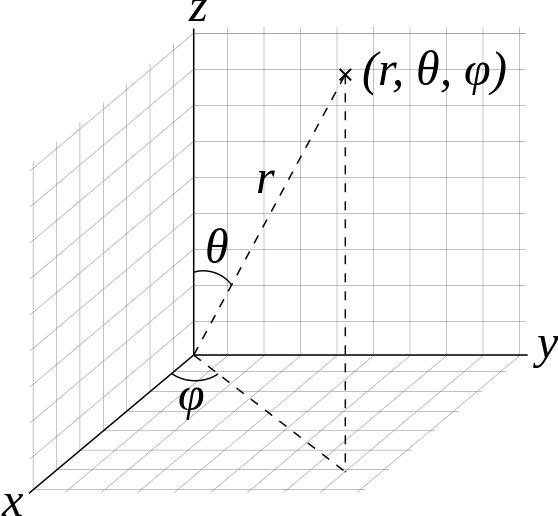
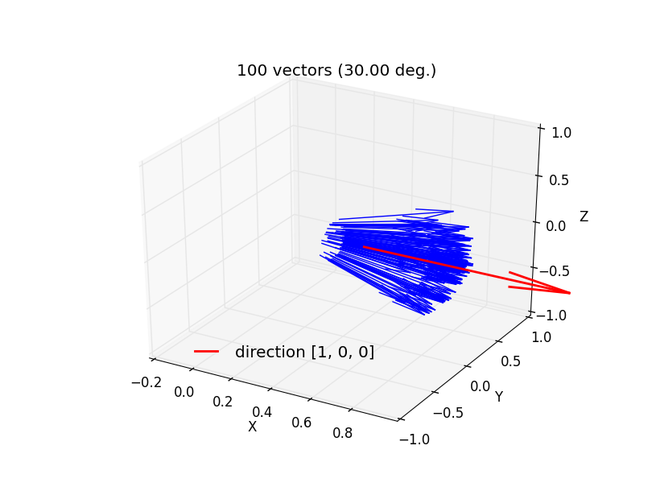
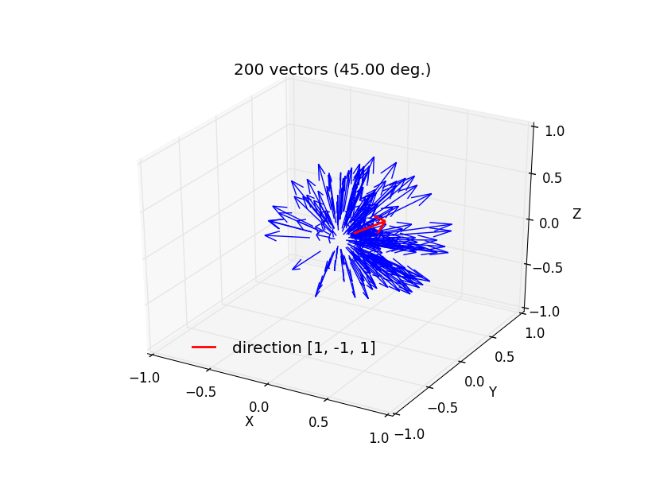
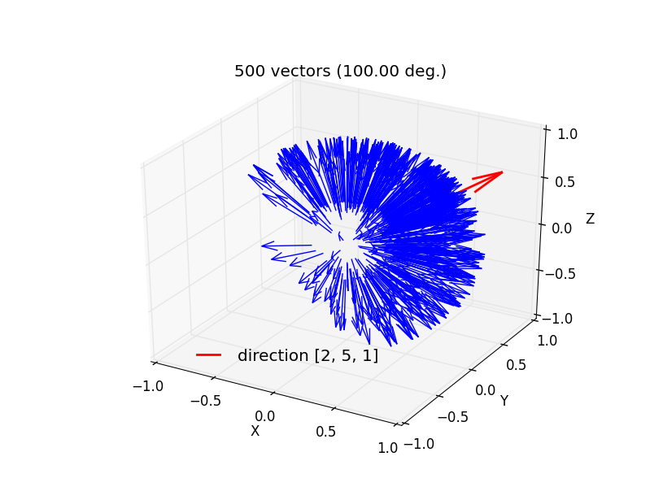
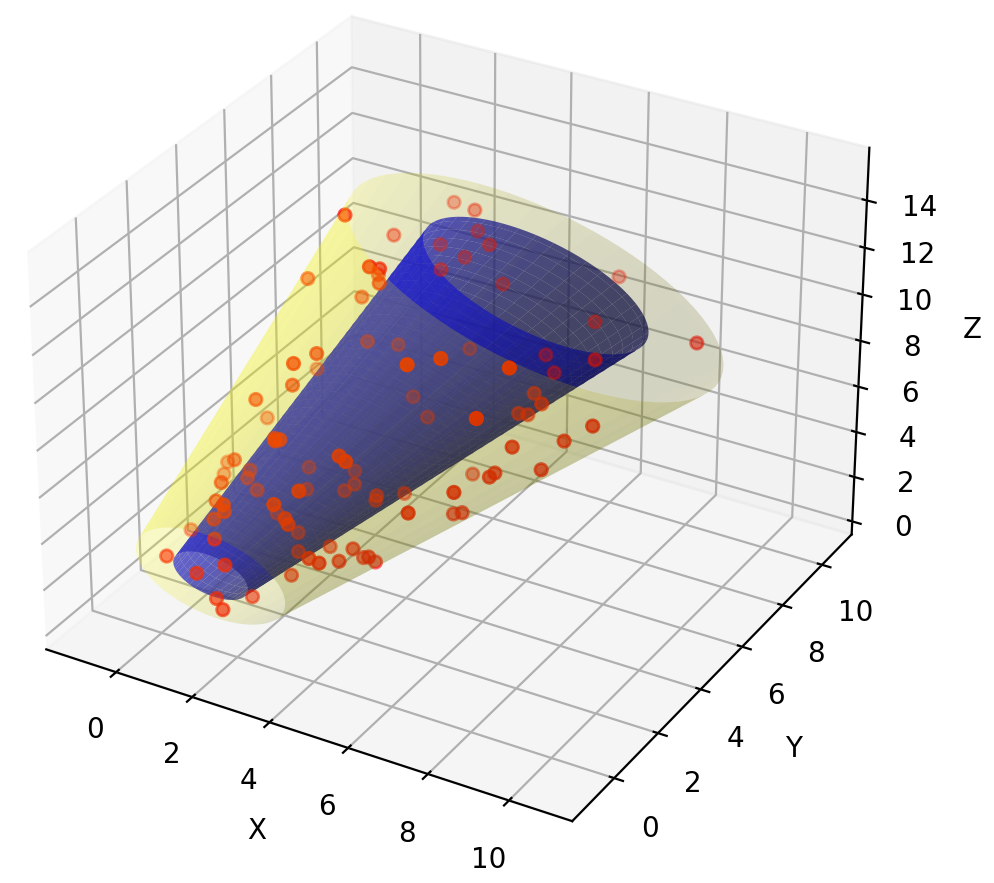
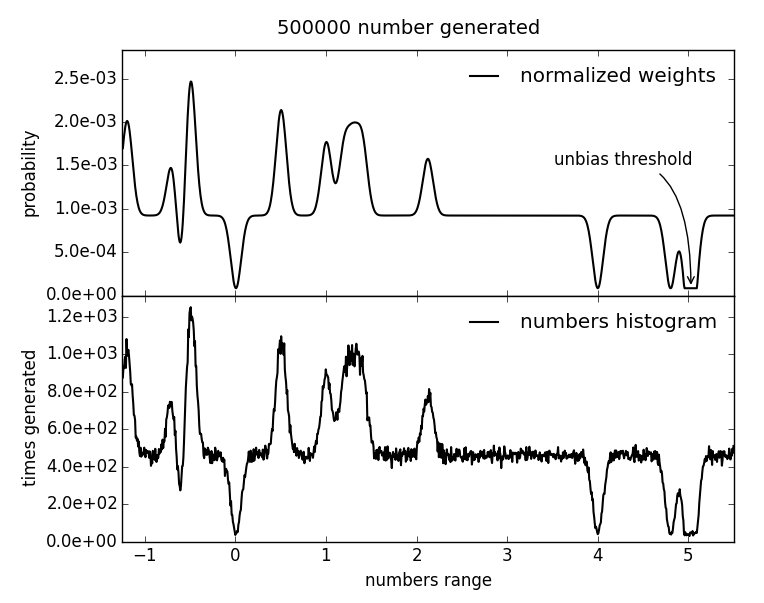
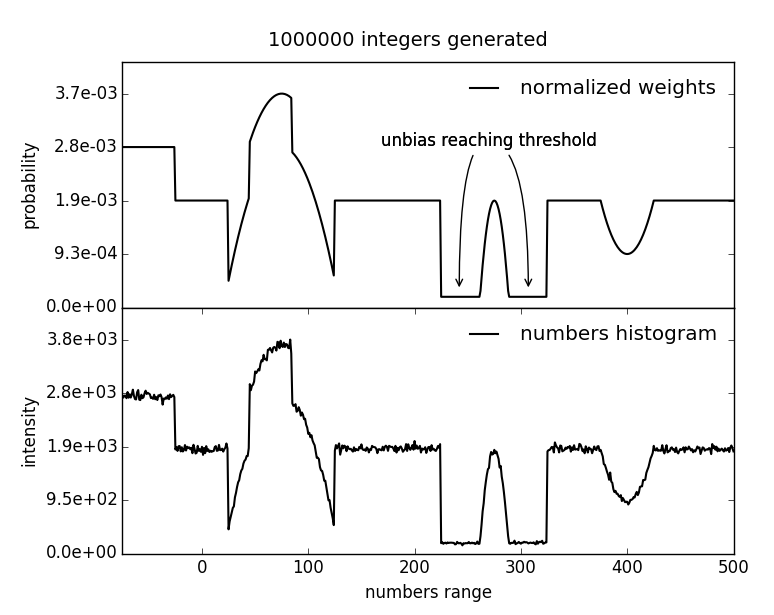
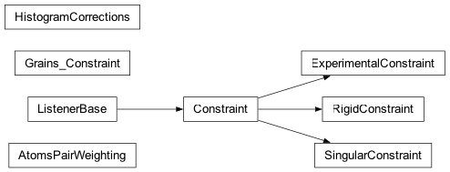
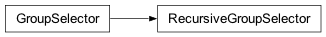

fullrmc.Core package¶
Collection¶
It contains a collection of methods and classes that are useful for the package.
- fullrmc.Core.Collection.generate_random_float()¶
random() -> x in the interval [0, 1).
- fullrmc.Core.Collection.make_json_ready(obj, decode='utf-8', complexAs='dict', customObj=False, fallback=False)¶
Recursively convert an object into something JSON-serializable.
- Handles:
datetime, date → ISO strings
Decimal → float
complex → {“real”: x, “imag”: y} or a string
UUID → str
NumPy arrays and scalars → lists / native Python types
dataclasses → dicts
sets and tuples → lists
custom objects → their __dict__
everything else → str fallback
- Parameters:
obj (object): the object to make json ready
decode (string): decoding to convert bytes to string
complexAs (string): how to represent complex numbers. ‘dict’ returns {‘real’:x, ‘imag’:y}, ‘str’ returns a formatted string such as ‘1+2j’, anything else falls back to str(obj).
customObj (bool): whether to use __dict__ in case object is not handled
fallback (bool): if object not handled, apply str(obj)
- Returns:
jobj (object): json ready object
- fullrmc.Core.Collection.get_bond_length(el1, el2, default=False, fudgeFactor=0.25, bondTable=None)¶
Get approximate bond length given 2 atomic species.
- Parameters:
el1 (string): first atom element
el2 (string): second atom element
default (None, boolean, number): when el1 or el2 are not found in bond table default will be used. If None, bond table None value will be considered. If number then default is set to that number. If False, an error will be raised if any of el1 or el2 are missing. If True, bond table default value will be used.
fudgeFactor (number): Extra distance in Angstroms added on top of the two elements’ covalent radii sum to get a slightly more permissive bond length threshold.
bondTable (None, dict): A custom elements-to-radius mapping to use instead of fullrmc’s built-in BOND_TABLE. Missing elements will still fall back to BOND_TABLE.
- Returns:
length (number): The approximate bond length between el1 and el2, computed as their radii sum plus fudgeFactor.
- fullrmc.Core.Collection.parse_molecules_from_box_of_atoms(boxCoords, basisVectors, elementsIndex, bonds, maxBonds=4, ncores=1)¶
automatically find and parse molecules from a given box of atoms
- Parameters:
boxCoords (numpy.ndarray): atoms coordinates in box system
basisVectors (None, numpy.ndarray): boundary conditions basis vectors. If None, then system is in infinite boundary conditions and therefore boxCoords are nothing else but real coordinates
elementsIndex (numpy.ndarray): Array of ‘N’ distinct element indexes
bonds (numpy.ndarray): (N,N) matrix of bonds defined between elements
maxBonds (integer): maximum number of bonds allowed per atom. Atoms can still have more than maxBonds but in some cases when this limit is reached while building bonds list, then bonds with weakest strength (strength = (bond - distance)/bond) will be removed.
ncores (integer): run atom bonds parsing number of cores to use
- Returns:
atomsBondIndexes (numpy.ndarray): array of all atoms in boxCoords as rows and maxBonds as columns where values are atoms bonded to the one in the row. -1 indicate no bond
molecules (list): parsed list of all found molecules from atomsBondIndexes
moleculesByKey (dict): dictionary of parsed molecules by unque key.
# imports from fullrmc.Core.Collection import parse_molecules_from_box_of_atoms, get_bond_length # get pdb from a fullrmc.OptimizationEngine.CrystalOptimizer object pdb = CO.get_pdb() boundCond = pdb.boundaryConditions basisVectors = boundCond.get_vectors().astype(np.float32) boxCoords = boundCond.real_to_box_array( pdb.coordinates ).astype(np.float32) elementsLUT = {} for el in sorted(set(pdb.elements)): elementsLUT[el] = len(elementsLUT) elementsIndex = np.array([elementsLUT[el] for el in pdb.elements], dtype=np.int32) bonds = np.zeros( (len(elementsLUT), len(elementsLUT)), dtype=np.float32 ) for el1 in elementsLUT: idx1 = elementsLUT[el1] for el2 in elementsLUT: idx2 = elementsLUT[el2] bonds[idx1,idx2] = get_bond_length(el1=el1.lower(), el2=el2.lower(), fudgeFactor=0.25) # parse molecules atomsBondIndexes, molecules, moleculesByKey = parse_molecules_from_box_of_atoms(boxCoords=boxCoords, basisVectors=basisVectors, elementsIndex=elementsIndex, bonds = bonds)
- fullrmc.Core.Collection.autofind_bonds_in_molecules(boxCoords, basisVectors, moleculesIndex, elementsIndex, bonds, maxBonds=4, definitionBounds=(-0.2, 0.2), atomsName=None, moleculesName=None, atomsElement=None, filter=None, ncores=1)¶
automatically find bonds in molecules
- Parameters:
boxCoords (numpy.ndarray): atoms coordinates in box system
basisVectors (None, numpy.ndarray): boundary conditions basis vectors. If None, then system is in infinite boundary conditions and therefore boxCoords are nothing else but real coordinates
moleculesIndex(numpy.ndarray): Array of molecule indexes
elementsIndex (numpy.ndarray): Array of element indexes
bonds (numpy.ndarray): (N,N) matrix of bonds defined between elements
maxBonds (integer): maximum number of bonds allowed per atom. Atoms can still have more than maxBonds but in some cases when this limit is reached while building bonds list, then bonds with weakest strength (strength = (bond - distance)/bond) will be removed.
definitionBounds (tuple): (minimum, maximum) relative tolerance bounds used to accept a bond strength deviation, expressed as (bond - distance)/bond.
atomsName (None, list): List of unique atoms names, one per atom in boxCoords. If None, atomsElement is used as names instead.
moleculesName (None, list): List of molecule names, one per atom in boxCoords, atoms sharing the same molecule must share the same name. If None, moleculesIndex is used instead.
atomsElement (None, list): List of atoms elements, one per atom in boxCoords. If None, all atoms are assigned the generic ‘X’ element.
filter (None, dict): Optional dictionary mapping an atom name to a list/tuple/set of allowed bonding partner names, restricting which atoms are allowed to bond together. If None, no filtering is applied.
ncores (integer): run atom bonds parsing number of cores to use
- Returns:
bondedAtoms (dictionary): Dictionary of molecule indexes as keys and values are list of bonded atom indexes tuple
# imports from fullrmc.Globals import get_bond_length from fullrmc.Core.Collection import parse_molecules_from_box_of_atoms, autofind_bonds_in_molecules #### given fullrmc engine E #### # get optimizer box needed attributes basisVectors = E.optimizer.maker.unitcellBC.get_vectors().astype(np.float32) boxCoords = np.array(E.optimizer.maker.unitcellAttributes['boxCoords'], dtype=np.float32) elements = E.optimizer.maker.unitcellAttributes['elements'] names = E.optimizer.maker.unitcellAttributes['names'] elementsLUT = {} for el in sorted(set(elements)): elementsLUT[el] = len(elementsLUT) # create elementsIndex array elementsIndex = np.array([elementsLUT[el] for el in elements], dtype=np.int32) # create bonds matrix bonds = np.zeros( (len(elementsLUT), len(elementsLUT)), dtype=np.float32 ) for el1 in elementsLUT: idx1 = elementsLUT[el1] for el2 in elementsLUT: idx2 = elementsLUT[el2] bonds[idx1,idx2] = get_bond_length(el1=el1.lower(), el2=el2.lower(), fudgeFactor=0.25) # parse molecules atomsBondIndexes, molecules, moleculesByKey = parse_molecules_from_box_of_atoms(boxCoords=boxCoords, basisVectors=basisVectors, elementsIndex=elementsIndex, bonds = bonds) # parse molecules moleculesIndex = [0]*len(elements) moleculesName = ['mol']*len(elements) atomsName = list(names) namesLUT = {} molNameIndex = 0 molIdx = 0 for k in moleculesByKey: mols = moleculesByKey[k] molNm = 'M%i'%molNameIndex molNameIndex += 1 indexes = sorted(mols[0][None]) newNames = [] for i in indexes: el = elements[i] _ = namesLUT.setdefault(el, -1) namesLUT[el] += 1 newNames.append('%s%s'%(el, namesLUT[el])) for m in mols: indexes = sorted(m[None]) for idx, i in enumerate(indexes): moleculesName[i] = molNm moleculesIndex[i] = molIdx atomsName[i] = newNames[idx] molIdx += 1 ## set optimizer structure redifinitions E.optimizer_set_stucture_redefinitions(atomsName = atomsName, moleculesIndex = moleculesIndex, moleculesName = moleculesName) ## get molecules index moleculesIndex = E.optimizer.engine.moleculesIndex[E.optimizer.unitcellIndexes] ## get bonded atoms in every molecule bondedAtoms, bondsDefinition = autofind_bonds_in_molecules(boxCoords=boxCoords, basisVectors=basisVectors, moleculesIndex=moleculesIndex, elementsIndex=elementsIndex, bonds=bonds, maxBonds=4, definitionBounds=(-0.2, 0.2), atomsName=names, moleculesName=moleculesName, definitionMoleculesMap=names, ncores = 1) ## create bond definition per molecule print(bondsDefinition)
- fullrmc.Core.Collection.autofind_angles_in_molecules(boxCoords, basisVectors, moleculesIndex, elementsIndex, bonds, maxBonds=4, definitionBounds=(-10, 10), atomsElement=None, atomsName=None, moleculesName=None, filter=None, ncores=1)¶
Automatically find bond angles in molecules, given the same bonded atoms building blocks used by autofind_bonds_in_molecules.
- Parameters:
boxCoords (numpy.ndarray): atoms coordinates in box system
basisVectors (None, numpy.ndarray): boundary conditions basis vectors. If None, then system is in infinite boundary conditions and therefore boxCoords are nothing else but real coordinates
moleculesIndex(numpy.ndarray): Array of molecule indexes
elementsIndex (numpy.ndarray): Array of element indexes
bonds (numpy.ndarray): (N,N) matrix of bonds defined between elements
maxBonds (integer): maximum number of bonds allowed per atom. Atoms can still have more than maxBonds but in some cases when this limit is reached while building bonds list, then bonds with weakest strength (strength = (bond - distance)/bond) will be removed.
definitionBounds (tuple): (minimum, maximum) tolerance bounds in degrees used to accept an angle deviation from its ideal value.
atomsElement (None, list): List of atoms elements, one per atom in boxCoords. If None, all atoms are assigned the generic ‘X’ element.
atomsName (None, list): List of unique atoms names, one per atom in boxCoords. If None, atomsElement is used as names instead.
moleculesName (None, list): List of molecule names, one per atom in boxCoords, atoms sharing the same molecule must share the same name. If None, moleculesIndex is used instead.
filter (None, dict): Optional dictionary mapping an atom name to a list/tuple/set of allowed bonding partner names, restricting which atoms are allowed to be considered when building angles. If None, no filtering is applied.
ncores (integer): run atom angles parsing number of cores to use
- Returns:
bondedAtoms (dictionary): Dictionary of molecule indexes as keys and values are list of bonded atom indexes tuple, same as returned by autofind_bonds_in_molecules.
anglesDefinition (dictionary): Dictionary of molecule indexes as keys and values are the found angle definitions between triplets of bonded atom indexes.
- fullrmc.Core.Collection.get_coarse_grained(engine, size)¶
convert structure into a coarse grained structure
- Parameters:
engine (fullrmc.Engine.Engine): fullrmc engine
size (dict, number): coarse grained size per element. If dict is given, None key must be given as default size and other keys must be for elements
- Returns:
realCoordinates (numpy.ndarray): grains center real coordinates
weights (numpy.ndarray): grains weight computed as the number of atoms in the grain
allElements (numpy.ndarray): grains element
- fullrmc.Core.Collection.fold_supercell_to_unitcell(engine, frame=None, contiguous=True, getBoxCoords=False, getPdb=False, getDict=False, _mergeResolution=None)¶
fold supercell atomic structure into unitcell coordinates
- Parameters:
engine (fullrmc.Engine.Engine): fullrmc engine
frame (None, string): The frame name. If None, engine usedFrame will be considered
contiguous (boolean): whether to get folded coordinates in a contiguous manner. If False, folded coordinates for atoms can swing from one side to another in the unitcell box
getBoxCoords (boolean): whether to get coordinates folded in unitcell box coordinates
getPdb (boolean): whether to get pdbparser instance of the folded structure
getDict (boolean): whether to get folded atoms positions as a numpy array or as a dictionary of unitcell position keys and atom coordinates numpy.ndarray values
_mergeResolution (None, number): Internal fullrmc engine parameter controlling the coordinates rounding resolution used to merge unitcell positions keys. End users should not need to alter this.
- Returns:
folded (dict, numpy.ndarray): if getDict is True, keys are unitcells position and values are unitcell atoms folded coordinates. if getDict is False, this is the atoms folded coordinates array of shape (number of atoms in unitcell, 3, number of unitcells). nan coordinates indicate removed atoms.
pdb (None, pdbparser): pdbparser instance of the folded structure
# import import matplotlib import matplotlib.pyplot as plt from matplotlib import cm from fullrmc.Core import Collection as FC # compute folded, pdb = FC.fold_supercell_to_unitcell(engine=engine, getBoxCoords=False, contiguous=True) elements = engine.supercell['unitcell_attributes']['elements'] names = engine.supercell['unitcell_attributes']['names'] for idx, (el, nm) in enumerate(zip(elements, names)): arr = folded[idx,:,:].T d = np.sqrt(np.sum((arr**2), axis=1)) x = ['x', np.min(arr[:,0]),np.max(arr[:,0])] y = ['y', np.min(arr[1,1]),np.max(arr[:,1])] z = ['z', np.min(arr[:,2]),np.max(arr[:,2])] d = ['d', np.min(d),np.max(d)] print(el, nm, x, y, z, d, ['diff',d[-1]-d[-2]]) # visualize pdb.visualize()
- fullrmc.Core.Collection.slice_structure_into_rods(engine, vector, width=1, origin=(0, 0, 0), original=True, foldIntoBox=True, filter=None, evaluator=None, toList=True, _raiseAllFiltered=False)¶
Split the engine atomic system into parallel rods (square cylinders of given width) starting from the given origin. All atoms found in a cylinder will be bundled together in a list or dictionary of atom indexes.
- Parameters:
engine (fullrmc.Engine): the engine instance
vector (string, list): the vector representation
width (number): the width of the square cylinder
origin (list): the origin that will be used as reference to start slicing the space into planes
original (boolean): whether to consider the original atomic coordinates or the current engine state
foldIntoBox (bool): whether to fold atoms into boundary conditions box before building rods
filter (None, string): filter expression string that will be evaluated to select the atoms to consider while building the planes. Expression can ingest all python math mathmatical functions and constants along with all of engine atoms ‘index’, ‘residue’,’sequence’, ‘segment’,’chainIdentifier’,’element’, ‘name’, ‘x’, ‘y’, ‘z’ attributes. If None is given, all atoms are considered.
evaluator (None, string, callable): evaluator callable. If None is given, fullrmc.Globals.Evaluators.default will be used. If string is given then fullrmc.Globals.Evaluators.get_evaluator will be called to get evaluator otherwise a callable must be given
toList (boolean): whether to return planes as ordered list of lists or a dictionary of lists.
_raiseAllFiltered (bool): Internal fullrmc flag. When True, an exception is raised if the filter expression discards every atom instead of silently returning empty rods. End users should not need to alter this.
- Returns:
rods (dict, list): the rods in a dictionary where keys are the relative position of the rod to the origin. If toList is True, a list of sub-lists of atom indexes will be returned where each sub-list will contain the atoms indexs as found in a particular rod
- fullrmc.Core.Collection.slice_structure_into_planes(engine, plane, width=3, origin=(0, 0, 0), original=True, foldIntoBox=True, filter=None, evaluator=None, toList=True, _raiseAllFiltered=False)¶
Split the engine atomic system into parallel planes (boxes of given width) starting from the given origin. All atoms found in a box will be bundled together in a list of atom indexes.
- Parameters:
engine (fullrmc.Engine): the engine instance
plane (string, list): the plane vectors representation
width (number): the width of the planes
origin (list): the origin that will be used as reference to start slicing the space into planes
original (boolean): whether to consider the original atomic coordinates or the current engine state
foldIntoBox (bool): whether to fold atoms into boundary conditions box before building planes
filter (None, string): filter expression string that will be evaluated to select the atoms to consider while building the planes. Expression can ingest all python math mathmatical functions and constants along with all of engine atoms ‘index’, ‘residue’,’sequence’, ‘segment’,’chainIdentifier’,’element’, ‘name’, ‘x’, ‘y’, ‘z’ attributes. If None is given, all atoms are considered.
evaluator (None, string, callable): evaluator callable. If None is given, fullrmc.Globals.Evaluators.default will be used. If string is given then fullrmc.Globals.Evaluators.get_evaluator will be called to get evaluator otherwise a callable must be given
toList (boolean): whether to return planes as ordered list of lists or a dictionary of lists.
_raiseAllFiltered (bool): Internal fullrmc flag. When True, an exception is raised if the filter expression discards every atom instead of silently returning empty planes. End users should not need to alter this.
- Returns:
planes (dict, list): the planes in a dictionary where keys are the relative position of the plane to the origin. If toList is True, a list of sub-lists of atom indexes will be returned where each sub-list will contain the atoms indexs as found in a particular plane
- fullrmc.Core.Collection.slice_supercell_structure_into_rods(engine, vector, name=None, filter=None, evaluator=None, toList=True, _raiseAllFiltered=False)¶
Split the engine supercell structure into parallel rods of atoms indexes
- Parameters:
engine (fullrmc.Engine): the engine instance
vector (string, list): the vector representation
name (None, string): Optional custom name used as a key/label for this slicing operation. If None, an automatically generated name is used instead.
filter (None, string): filter expression string that will be evaluated to select the atoms to consider while building the planes. Expression can ingest all python math mathmatical functions and constants along with all of engine atoms ‘index’, ‘residue’,’sequence’, ‘segment’,’chainIdentifier’,’element’, ‘name’, ‘x’, ‘y’, ‘z’ attributes. If None is given, all atoms are considered.
evaluator (None, string, callable): evaluator callable. If None is given, fullrmc.Globals.Evaluators.default will be used. If string is given then fullrmc.Globals.Evaluators.get_evaluator will be called to get evaluator otherwise a callable must be given
toList (boolean): whether to return planes as ordered list of lists or a dictionary of lists.
_raiseAllFiltered (bool): Internal fullrmc flag. When True, an exception is raised if the filter expression discards every atom instead of silently returning empty rods. End users should not need to alter this.
- Returns:
rods (dict, list): the rods in a dictionary where keys are the relative position of the rod to the origin. If toList is True, a list of sub-lists of atom indexes will be returned where each sub-list will contain the atoms indexs as found in a particular rod
- fullrmc.Core.Collection.slice_supercell_structure_into_planes(engine, plane, filter=None, evaluator=None, toList=True, _raiseAllFiltered=False)¶
Split the engine supercell structure into parallel planes of atoms indexes
- Parameters:
engine (fullrmc.Engine): the engine instance
plane (string, list): the plane vectors representation
filter (None, string): filter expression string that will be evaluated to select the atoms to consider while building the planes. Expression can ingest all python math mathmatical functions and constants along with all of engine atoms ‘index’, ‘residue’,’sequence’, ‘segment’,’chainIdentifier’,’element’, ‘name’, ‘x’, ‘y’, ‘z’ attributes. If None is given, all atoms are considered.
evaluator (None, string, callable): evaluator callable. If None is given, fullrmc.Globals.Evaluators.default will be used. If string is given then fullrmc.Globals.Evaluators.get_evaluator will be called to get evaluator otherwise a callable must be given
toList (boolean): whether to return planes as ordered list of lists or a dictionary of lists.
_raiseAllFiltered (bool): Internal fullrmc flag. When True, an exception is raised if the filter expression discards every atom instead of silently returning empty planes. End users should not need to alter this.
- Returns:
planes (dict, list): the planes in a dictionary where keys are the relative position of the plane to the origin. If toList is True, a list of sub-lists of atom indexes will be returned where each sub-list will contain the atoms indexs as found in a particular plane
- fullrmc.Core.Collection.group_structure_atoms_into_neighbours(engine, original=True, numberOfNeighbours=1, includeCentralAtom=True, cFilter=None, cEvaluator=None, nFilter=None, nEvaluator=None, toList=True, _raiseAllFiltered=False)¶
build and group atoms into first neighbours by distance
- Parameters:
engine (fullrmc.Engine): the engine instance
original (boolean): whether to consider the original atomic coordinates or the current engine state
numberOfNeighbours (int): number of neighbours. Must be >=1
includeCentralAtom (Boolean): whether to include central atom in the group
cFilter (None, string): center atom filter expression string that will be evaluated to select the atoms to consider while building the planes. Expression can ingest all python math mathmatical functions and constants along with all of engine atoms ‘index’, ‘residue’,’sequence’, ‘segment’,’chainIdentifier’,’element’, ‘name’, ‘x’, ‘y’, ‘z’ attributes. If None is given, all atoms are considered.
cEvaluator (None, string, callable): center atom evaluator callable. If None is given, fullrmc.Globals.Evaluators.default will be used. If string is given then fullrmc.Globals.Evaluators.get_evaluator will be called to get evaluator otherwise a callable must be given
nFilter (None, string): neighbour atoms filter
nEvaluator (None, string): neighbour atoms evaluator
toList (boolean): whether to return planes as ordered list of lists or a dictionary of lists.
_raiseAllFiltered (bool): Internal fullrmc flag. When True, an exception is raised if the filter expression discards every atom instead of silently returning an empty grouping. End users should not need to alter this.
- Returns:
neighbours (dict, list): the neighbours in a dictionary where keys are atom index and values list of neighbours. If toList is True, a list of sub-lists of atom indexes will be returned where each sub-list will contain the atoms indexs as found in a particular plane
- fullrmc.Core.Collection.filter_atoms(engine, indexes=None, atoms=None, groups=None, evaluator=None, _raiseAllFiltered=False)¶
Filter atoms and return a list of filtered atoms indexes
- Parameters:
engine (fullrmc.Engine): engine instance
indexes (None, list): list of atoms indexes to filter from. If None, all engine atoms will be considered
atoms (None, string): atoms filter expression. If None all atoms are considered. if ‘all’ is given then all atoms are considered as well
groups (None, string): groups filter. If None all groups are considered. if ‘all’ is given then all groups are considered as well
evaluator (None, string, callable): evaluator callable. If None is given, fullrmc.Globals.Evaluators.default will be used. If string is given then fullrmc.Globals.Evaluators.get_evaluator will be called to get evaluator otherwise a callable must be given
_raiseAllFiltered (bool): Internal fullrmc flag. When True, an exception is raised if the filter expressions discard every atom instead of silently returning an empty list. End users should not need to alter this.
- Returns:
indexes (list): list of filtered atoms indexes
e.g. index in set(range(100)) or ((sqrt(x**2+y**2+z**2) > 25) and element.lower() in {‘ti’:True,’ni’:True}
- fullrmc.Core.Collection.atoms_group_by(engine, indexes, groupBy=None, stringKeys=False)¶
create atom indexes groups given a groupBy string or a list of string attributes
- Parameters:
engine (fullrmc.Engine): engine instance
indexes (list, set, tuple, np.ndarray): list of atom indexes
groupBy (None, string, list): List of group by keywords to create atom groupings. If None is given, a single group of all given indexes will be created with the group key set to None. If a string or a list of strings is given, it can include any of the following pdb property keywords [‘index’,’residue’,’sequence’,’segment’, ‘chainIdentifier’,’element’,’name’, ‘moleculeIndex’, ‘moleculeName’] that will be used to create atom groups. It’s worth noting that groupBy=[‘residue’,’sequence’,’segment’] is the groupBy list used by default in fullrmc to identify molecules in a pdb structure. Just like filters, groupBy keywords are not case sensitive.
stringKeys (boolean): Whether to create group dictionary with keys as strings
- Returns:
groups (dict): dictionary of groups where keys are unique groups properties tuples and values are list of indexes
- fullrmc.Core.Collection.list_to_ranges(l, check=False)¶
split a list of integers into ranges.
- Parameters:
l (list):list of integers
check (bool): check l for non valid entries
- Returns:
lr (list): list of ranges
- fullrmc.Core.Collection.bandpass_filter(x, low=None, high=None, normalize=True)¶
Create a bandwidth filter for x frequencies array
- Parameters:
x (numpy.ndarray): the frequencies array to build the filter for.
low (None, number, dict): low frequency filter parameters. If None, no low frequency filter will be created If number, it is the low frequency position If dict, it will contain the low frequency filter parameters where default values are {‘type’:’sigmoid’, ‘position’:None, ‘coefficient’:1}
high (None, number, dict): high frequency filter parameters. If None, no high frequency filter will be created If number, it is the high frequency position If dict, it will contain the low frequency filter parameters where default values are {‘type’:’sigmoid’, ‘position’:None, ‘coefficient’:1}
normalize (boolean, tuple): whether to normalize filter intensity between 0 and 1 If False, no mormalization will be applied. If True, between 0 and 1 normalization will be applied If tuple, it must be of length 2 where the fiter item is the flag for lower bound normalization to 0 and the second it the flag for upper bound normalization flag to 1
- Returns:
filter (numpy.ndarray): filter array of the size of given x
N.B. filter low and high parameters position if not set, no filter will be applied
- fullrmc.Core.Collection.sinc_convolution(q, sq, rmax, ncores=1)¶
Convolute S(q) with sinc(q*rmax). This convolution can be used to normalized the experimental S(q) in order to account for the simulation finite box size impact on the model’s computed S(q). This is a pre-processing to use upon experimental S(q) prior to setting ReducedStructureFactorConstraint or StructureFactorConstraint
- Parameters:
q (numpy.array): numpy array of reciprocal distance q
sq (numpy.array): numpy array of experimental structure factor
rmax (int, float): the radius of largest sphere in big box model
ncores (int): number of cores to use for the convolution
- Returns:
newsq (numpy.array): the convoluted S(q)
import numpy as np import matplotlib.pyplot as plt from fullrmc.Core import Collection # read experimental data d = np.loadtxt('experimental.fq') q = d[:,0] sq = d[:,1] rmax = 40 # get convoluted sq newsq = Collection.sinc_convolution(q=q,sq=sq,rmax=rmax) # plot _ = plt.plot(q,sq,label='sq'); _ = plt.plot(q,newsq,label='convoluted') _ = plt.legend() _ = plt.show() # get the convoluted sq as constraint experimental data from fullrmc.Constraints.StructureFactorConstraints import StructureFactorConstraint, ReducedStructureFactorConstraint d[:,1] = newsq ReducedStructureFactorConstraint(experimentalData=d) StructureFactorConstraint(experimentalData=d)
- fullrmc.Core.Collection.get_normal_filter(data, z=2, ps=0.15)¶
get normal (gaussian) filter that can be used to smooth to smooth given data itself via convolution or fullrmc implemented auto_adjusting_convolution function
- Parameters:
data (numpy.array): numpy array data
z (integer): z score to create the maximum filter width
ps (float): percent size in number of data points that is going to be used to compute the size of the returned filter. e.g. if data length is 100 and pw is 0.2 then filter length is going to be 20
- Returns:
filter (numpy.array): the filter array
- fullrmc.Core.Collection.auto_adjusting_convolution(vector, filter)¶
convolute vector with filter with auto-atjusting upon edges
- Parameters:
vector (numpy.array): numpy array data to convolute
filter (numpy.array): numpy array convolution filter
- Returns:
result (numpy.array): convoluted array
- fullrmc.Core.Collection.fix_path_sep(path)¶
fix string path seperator
- Parameters:
path (string): If string, user expanded path will be returned. If pathlib.Path is given, resolved string will be returned.
- Returns:
result (string): fixed path
- fullrmc.Core.Collection.resolve_path(path, fixSep=True, allowNone=True, realPath=False)¶
get path resolved as a string.
- Parameters:
path (None, string, pathlib.Path): If string, user expanded path will be returned. If pathlib.Path is given, resolved string will be returned.
fixSep (boolean): whether to fix string path seperator
allowNone (boolean): whether to allow None path
realPath (bool): whether to rebuild real path
- Returns:
result (None, string): None is returned if path is None, string is returned otherwise
- fullrmc.Core.Collection.get_caller_frames(engine, frame, subframeToAll, caller, _logUsage=True)¶
Get list of frames for a function caller.
- Parameters:
engine (None, Engine): The stochastic engine in consideration.
frame (None, string): The frame name. If engine is given as None, only None will be accepted as frame value.
subframeToAll (boolean): If frame is a subframe then all multiframe subframes must be considered.
caller (string): Caller name for logging and debugging purposes.
_logUsage (bool): Internal fullrmc flag controlling whether this frame lookup is reported to the logger. End users should not need to alter this.
- Returns:
usedIncluded (boolean): Whether engine used frame is included in the built frames list. If frame is given as None, True will always be returned.
frame (string): The given frame in parameters. If subframe is given and subframeToAll is True, then multiframe is returned.
allFrames (list): List of all frames.
import inspect from fullrmc.Core.Collection import get_caller_frames # Assuming self is a constraint and get_caller_frames is called from within a method ... usedIncluded, frame, allFrames = get_caller_frames(engine=self.engine, frame='frame_name', subframeToAll=True, caller="%s.%s"%(self.__class__.__name__,inspect.stack()[0][3]) )
- fullrmc.Core.Collection.get_real_elements_weight(elements, weightsDict, weighting)¶
Get elements weights given a dictionary of weights and a weighting scheme. If element weight is not defined in weightsDict then weight is fetched from pdbparser elements database using weighting scheme.
- Parameters:
elements (list): List of elements.
weightsDict (None, dict): Dictionary of fixed weights.
weighting (str): Weighting scheme.
- Returns:
elementsWeight (dict): Elements weights got from weightsDict and completed using weighting scheme,
- fullrmc.Core.Collection.get_trdf_scattering_power(numbers, weights, pairsWeight=None)¶
Calculates the total radial distribution function normalized weighting scheme for a set of elements.
- Parameters:
numbers (dictionary): The numbers of elements dictionary. keys are the elements and values are the numbers of elements in the system
weights (dictionary): the weight of every element. keys are the elements and values are the weights. weights must have the same length as numbers.
pairsWeight (None, dictionary): the customized interaction weight for element pairs. keys must be a tuple of elements pair and values are the weights.
- Returns:
normalizedWeights (dictionary): the normalized weighting scheme for every pair of elements.
- fullrmc.Core.Collection.get_pdf_scattering_power(numbers, weights, pairsWeight=None)¶
Calculates the pair distribution function normalized weighting scheme for a set of elements.
- Parameters:
numbers (dictionary): The numbers of elements dictionary. keys are the elements and values are the numbers of elements in the system
weights (dictionary): the weight of every element. keys are the elements and values are the weights. weights must have the same length as numbers.
pairsWeight (None, dictionary): the customized interaction weight for element pairs. keys must be a tuple of elements pair and values are the weights. Usually pairs weight is the multiplication of both elements weight.
- Returns:
normalizedWeights (dictionary): the normalized weighting scheme for every pair of elements.
- fullrmc.Core.Collection.raise_if_collected(func)¶
Constraints method decorator that raises an error whenever the method is called and the system has atoms that were removed.
- Parameters:
func (callable): The constraint method to decorate.
- Returns:
wrapper (callable): The wrapped method that performs the check before calling func.
- fullrmc.Core.Collection.reset_if_collected_out_of_date(func)¶
Constraints method decorator that resets the constraint whenever the method is called and the system has atoms that were removed.
- Parameters:
func (callable): The constraint method to decorate.
- Returns:
wrapper (callable): The wrapped method that performs the reset before calling func.
- fullrmc.Core.Collection.multiframe_structure_update_constraints(func)¶
Constraints method decorator that sets ‘must_reset_constraints’ flag for multiframe_structure if function is called upon the reference subframe.
- Parameters:
func (callable): The Engine or Constraint method to decorate.
- Returns:
wrapper (callable): The wrapped method that updates multiframe structures after calling func.
- fullrmc.Core.Collection.is_number(number)¶
Check if number is convertible to float.
- Parameters:
number (str, number): Input number.
- Returns:
result (bool): True if convertible, False otherwise
- fullrmc.Core.Collection.is_integer(number, precision=1e-09)¶
Check if number is convertible to integer.
- Parameters:
number (str, number): Input number.
precision (number): To avoid floating errors, a precision should be given.
- Returns:
result (bool): True if convertible, False otherwise.
- fullrmc.Core.Collection.get_elapsed_time(start, format='%d days, %d hours, %d minutes, %d seconds')¶
Get formatted time elapsed.
- Parameters:
start (time.time): A time instance.
format (string): The format string. must contain exactly four ‘%d’.
- Returns:
time (string): The formatted elapsed time.
- fullrmc.Core.Collection.get_process_children(pid, recursive=True)¶
Get all children process of a parent process
- Parameters:
pid (int): The parent process id number
recursive (bool): Whether to recursively collect all descendant processes, not just the direct children.
- Returns:
parent (None, psutil.Process): the parent process. If the parent is not found, None will be returned
children (list): List of children processes of type psutil.Process . If parent is not foundthe list will be empty
- fullrmc.Core.Collection.get_memory_usage()¶
Get current process memory usage. This is method requires psutils to be installed.
- Returns:
memory (float, None): The memory usage in Megabytes. When psutils is not installed, None is returned.
- fullrmc.Core.Collection.get_path(key=None)¶
Get all paths information needed about the running script and python executable path.
- Parameters:
#. key (None, string): the path to return. If not None is given, it can take any of the following:
cwd: current working directory
script: the script’s total path
exe: python executable path
script_name: the script name
relative_script_dir: the script’s relative directory path
script_dir: the script’s absolute directory path
fullrmc: fullrmc package path
- Returns:
path (dictionary, value): If key is not None it returns the value of paths dictionary key. Otherwise all the dictionary is returned.
- fullrmc.Core.Collection.rebin(data, bin=0.05, check=False)¶
Re-bin 2D data of shape (N,2). In general, fullrmc requires equivalently spaced experimental data bins. This function can be used to recompute any type of experimental data according to a set bin size.
- Parameters:
data (numpy.ndarray): The (N,2) shape data where first column is considered experimental data space values (e.g. r, q) and second column experimental data values.
bin (number): New desired bin size.
check (boolean): whether to check arguments before rebining.
- Returns:
X (numpy.ndarray): First column re-binned.
Y (numpy.ndarray): Second column re-binned.
- fullrmc.Core.Collection.smooth(data, winLen=11, window='hanning', check=False)¶
Smooth 1D data using window function and length.
- Parameters:
data (numpy.ndarray): the 1D numpy data.
winLen (integer): the smoothing window length.
window (str): The smoothing window type. Can be anything among ‘flat’, ‘hanning’, ‘hamming’, ‘bartlett’ and ‘blackman’.
check (boolean): whether to check arguments before smoothing data.
- Returns:
smoothed (numpy.ndarray): the smoothed 1D data array.
- fullrmc.Core.Collection.get_random_perpendicular_vector(vector)¶
Get random normalized perpendicular vector to a given vector.
- Parameters:
vector (numpy.ndarray, list, set, tuple): Given vector to compute a random perpendicular vector to it.
- Returns:
perpVector (numpy.ndarray): Perpendicular vector of type fullrmc.Globals.FLOAT_TYPE
- fullrmc.Core.Collection.get_principal_axis(coordinates, weights=None)¶
Calculate principal axis of a set of atoms coordinates.
- Parameters:
coordinates (np.ndarray): Atoms (N,3) coordinates array.
weights (numpy.ndarray, None): List of weights to compute the weighted Center Of Mass (COM) calculation. Must be a numpy.ndarray of numbers of the same length as indexes. None is accepted for equivalent weighting.
- Returns:
center (numpy.ndarray): the weighted COM of the atoms.
eval1 (fullrmc.Globals.FLOAT_TYPE): Biggest eigen value.
eval2 (fullrmc.Globals.FLOAT_TYPE): Second biggest eigen value.
eval3 (fullrmc.Globals.FLOAT_TYPE): Smallest eigen value.
axis1 (numpy.ndarray): Principal axis corresponding to the biggest eigen value.
axis2 (numpy.ndarray): Principal axis corresponding to the second biggest eigen value.
axis3 (numpy.ndarray): Principal axis corresponding to the smallest eigen value.
- fullrmc.Core.Collection.get_rotation_matrix(rotationVector, angle)¶
Calculate the rotation (3X3) matrix about an axis (rotationVector) by a rotation angle.
- Parameters:
rotationVector (list, tuple, numpy.ndarray): Rotation axis coordinates.
angle (float): Rotation angle in rad.
- Returns:
rotationMatrix (numpy.ndarray): Computed (3X3) rotation matrix
- fullrmc.Core.Collection.get_axis_angle_from_rotation_matrix(rotationMatrix)¶
Calculate the rotation axis and angle given a (3X3) rotation matrix
- Parameters:
rotationMatrix (numpy.ndarray): The (3X3) rotation matrix
- Returns:
axis (numpy.ndarray): Rotation axis coordinates.
angle (float): Rotation angle in rad.
- fullrmc.Core.Collection.rotate(xyzArray, rotationMatrix)¶
Rotate (N,3) numpy.array using a rotation matrix. The array itself will be rotated and not a copy of it.
- Parameters:
xyzArray (numpy.ndarray): the xyz (N,3) array to rotate.
rotationMatrix (numpy.ndarray): the (3X3) rotation matrix.
- Returns:
xyzArray (numpy.ndarray): The same input array, rotated in place.
- fullrmc.Core.Collection.get_orientation_matrix(arrayAxis, alignToAxis)¶
Get the rotation matrix that aligns arrayAxis to alignToAxis
- Parameters:
arrayAxis (list, tuple, numpy.ndarray): xyzArray axis.
alignToAxis (list, tuple, numpy.ndarray): The axis to align to.
- Returns:
matrix (numpy.ndarray): The (3x3) rotation matrix that aligns arrayAxis onto alignToAxis.
- fullrmc.Core.Collection.orient(xyzArray, arrayAxis, alignToAxis)¶
Rotates xyzArray using the rotation matrix that rotates and aligns arrayAxis to alignToAXis.
- Parameters:
xyzArray (numpy.ndarray): The xyz (N,3) array to rotate.
arrayAxis (list, tuple, numpy.ndarray): xyzArray axis.
alignToAxis (list, tuple, numpy.ndarray): The axis to align to.
- Returns:
xyzArray (numpy.ndarray): The same input array, rotated in place.
- fullrmc.Core.Collection.get_superposition_transformation(refArray, array, check=False)¶
Calculate the rotation tensor and the translations that minimizes the root mean square deviation between an array of vectors and a reference array.
- Parameters:
refArray (numpy.ndarray): The NX3 reference array to superpose to.
array (numpy.ndarray): The NX3 array to calculate the transformation of.
check (boolean): Whether to check arguments before generating points.
- Returns:
rotationMatrix (numpy.ndarray): The 3X3 rotation tensor.
refArrayCOM (numpy.ndarray): The 1X3 vector center of mass of refArray.
arrayCOM (numpy.ndarray): The 1X3 vector center of mass of array.
rms (number)
# to get the best move of c1 towards c0 rotationMatrix, cm0,cm1, e = get_superposition_transformation(refArray=c0, array=c1, check=True) c1_to_c0 = np.dot( rotationMatrix, np.transpose(c1-cm1).reshape(1,3,-1)).transpose().reshape(-1,3) + cm0
- fullrmc.Core.Collection.superpose_array(refArray, array, check=False)¶
Superpose arrays by calculating the rotation matrix and the translations that minimize the root mean square deviation between and array of vectors and a reference array.
- Parameters:
refArray (numpy.ndarray): the NX3 reference array to superpose to.
array (numpy.ndarray): the NX3 array to calculate the transformation of.
check (boolean): whether to check arguments before generating points.
- Returns:
superposedArray (numpy.ndarray): the NX3 array to superposed array.
- fullrmc.Core.Collection.generate_random_vector(minAmp, maxAmp)¶
Generate random vector in 3D.
- Parameters:
minAmp (number): Vector minimum amplitude.
maxAmp (number): Vector maximum amplitude.
- Returns:
vector (numpy.ndarray): the vector [X,Y,Z] array
- fullrmc.Core.Collection.generate_random_xyz_vector(minX, maxX, minY, maxY, minZ, maxZ, polarize=True)¶
Generate random vector in 3D.
- Parameters:
minX (number): Vector minimum amplitude along X.
maxX (number): Vector maximum amplitude along X.
minY (number): Vector minimum amplitude along Y.
maxY (number): Vector maximum amplitude along Y.
minZ (number): Vector minimum amplitude along Z.
maxZ (number): Vector maximum amplitude along Z.
polarize (boolean): whether to apply random negative sign upon X, Y or Z
- Returns:
vector (numpy.ndarray): the vector [X,Y,Z] array
- fullrmc.Core.Collection.generate_plane_random_vector(p0, p1, p2, normal=False, raiseError=False)¶
Given three points in 3D, generate a random vector lying in the plane defined by the points. Return None if points are collinear.
- Parameters:
p0, p1, p2 (list,tuple,numpy.ndarray): array-like points in 3D
normal (boolean): whether to generate vector in the plan or normal to the plane
raiseError (boolean): whether to raise an exception if points are collinear. If False and points are collinear, None will be returned.
- Returns:
Vector (numpy.ndarray) : Generated random vector in 3D.
- fullrmc.Core.Collection.generate_circle_tangent_vector(center, point, planePoint, raiseError=False)¶
Generate a tangent vector at ‘point’ on a circle defined by ‘center’ lying in the plane defined by ‘center’, ‘point’, and ‘planePoint’.
- Parameters:
center (list,tuple,numpy.ndarray): Center of the circle
point (list,tuple,numpy.ndarray): Point on the circle
planePoint (list,tuple,numpy.ndarray): Another point to define the plane
raiseError (boolean): whether to raise an exception if center and point coincide. If False, None will be returned instead.
- Returns:
vector (numpy.ndarray) : unit tangent vector at ‘point’
- fullrmc.Core.Collection.generate_points_on_sphere(thetaFrom, thetaTo, phiFrom, phiTo, npoints=1, check=False)¶
Generate random points on a sphere of radius 1. Points are generated using spherical coordinates arguments as in figure below. Theta [0,Pi] is the angle between the generated point and Z axis. Phi [0,2Pi] is the angle between the generated point and x axis.

- Parameters:
thetaFrom (number): The minimum theta value.
thetaTo (number): The maximum theta value.
phiFrom (number): The minimum phi value.
phiTo (number): The maximum phi value.
npoints (integer): The number of points to generate
check (boolean): whether to check arguments before generating points.
- Returns:
x (numpy.ndarray): The (npoints,1) numpy array of all generated points x coordinates.
y (numpy.ndarray): The (npoints,1) numpy array of all generated points y coordinates.
z (numpy.ndarray): The (npoints,1) numpy array of all generated points z coordinates.
{kind=link}
- fullrmc.Core.Collection.find_extrema(x, max=True, min=True, strict=False, withend=False)¶
Get a vector extrema indexes and values.
- Parameters:
x (numpy.ndarray): The 1D vector to find extrema in.
max (boolean): Whether to index the maxima.
min (boolean): Whether to index the minima.
strict (boolean): Whether not to index changes to zero gradient.
withend (boolean): Whether to always include x[0] and x[-1].
- Returns:
indexes (numpy.ndarray): Extrema indexes.
values (numpy.ndarray): Extrema values.
- fullrmc.Core.Collection.generate_vectors_in_solid_angle(direction, maxAngle, numberOfVectors=1, check=False)¶
Generate random vectors that satisfy angle condition with a direction vector. Angle between any generated vector and direction must be smaller than given maxAngle.

a) 100 vectors generated around OX axis within a maximum angle separation of 30 degrees.¶

b) 200 vectors generated around [1,-1,1] axis within a maximum angle separation of 45 degrees.¶

b) 500 vectors generated around [2,5,1] axis within a maximum angle separation of 100 degrees.¶
- Parameters:
direction (number): The direction around which to create the vectors.
maxAngle (number): The maximum angle allowed.
numberOfVectors (integer): The number of vectors to generate.
check (boolean): whether to check arguments before generating vectors.
- Returns:
vectors (numpy.ndarray): The (numberOfVectors,3) numpy array of generated vectors.
{kind=link}
{kind=link}
{kind=link}
- fullrmc.Core.Collection.generate_vectors_in_truncated_cone(direction, height, bottom, top, numberOfVectors=1, check=False)¶
Generate random vectors in a truncated cone where the bottom radius can be non-cero

a) 100 vectors generated in a truncated cone along [1,1,2] with height [2,15] bottom [1,2] and top [3,5]¶
- Parameters:
direction (numpy.ndarray): The 3D direction of the cylinder.
height (list, numpy.ndarray): the height of the cylinder as min and max
bottom (list, numpy.ndarray): the radius at the bottom of the cylinder as min and max
top (list, numpy.ndarray): the radius at the top of the cylinder as min and max
numberOfVectors (integer): The number of vectors to generate.
check (boolean): whether to check arguments before generating vectors.
- Returns:
vectors (numpy.ndarray): The (numberOfVectors,3) numpy array of generated vectors.
{kind=link}
- fullrmc.Core.Collection.gaussian(x, center=0, FWHM=1, normalize=True, check=True)¶
Compute the normal distribution or gaussian distribution of a given vector. The probability density of the gaussian distribution is: \(f(x,\mu,\sigma) = \frac{1}{\sigma\sqrt{2\pi}} e^{\frac{-(x-\mu)^{2}}{2\sigma^2}}\)
Where:
\(\mu\) is the center of the gaussian, it is the mean or expectation of the distribution it is called the distribution’s median or mode.
\(\sigma\) is its standard deviation.
\(FWHM=2\sqrt{2 ln 2} \sigma\) is the Full Width at Half Maximum of the gaussian.
- Parameters:
x (numpy.ndarray): The vector to compute the gaussian
center (number): The center of the gaussian.
FWHM (number): The Full Width at Half Maximum of the gaussian.
normalize(boolean): Whether to normalize the generated gaussian by \(\frac{1}{\sigma\sqrt{2\pi}}\) so the integral is equal to 1.
check (boolean): whether to check arguments before generating vectors.
- Returns:
y (numpy.ndarray): The computed gaussian distribution values.
- fullrmc.Core.Collection.step_function(x, center=0, FWHM=0.1, height=1, check=True)¶
Compute a step function as the cumulative summation of a gaussian distribution of a given vector.
- Parameters:
x (numpy.ndarray): The vector to compute the gaussian. gaussian is computed as a function of x.
center (number): The center of the step function which is the the center of the gaussian.
FWHM (number): The Full Width at Half Maximum of the gaussian.
height (number): The height of the step function.
check (boolean): whether to check arguments before generating vectors.
- Returns:
sf (numpy.ndarray): The computed step function values.
- fullrmc.Core.Collection.full_stack()¶
Pull all traceback stack
- Returns:
stack (str): traceback stack as a formatted printable string
from __future__ import print_function from fullrmc.Core.Collection import full_stack try: a = [] a += 1 except Exception as err: print('Exception error:') print(err) print() print('full_stack:') print(full_stack()) >>> Exception error: >>> 'int' object is not iterable >>> >>> full_stack: >>> Traceback (most recent call last): >>> File "<stdin>", line 3, in <module> >>> TypeError: 'int' object is not iterable
- class fullrmc.Core.Collection.DummyGrains(*args, **kwargs)¶
Bases:
objectA placeholder no-op grains class that simply swallows any positional or keyword arguments given at initialization.
- class fullrmc.Core.Collection.ListenerBase¶
Bases:
objectAll listeners base class.
- property listenerId¶
Listener unique id set at initialization.
- Returns:
listenerId (string): The listener’s unique uuid4 string.
- listen(message, argument=None)¶
Listens to any message sent from the Broadcaster.
- Parameters:
message (object): Any python object to send to constraint’s listen method.
argument (object): Any python object.
- class fullrmc.Core.Collection.Broadcaster¶
Bases:
objectA broadcaster broadcasts a message to all registered listener.
- property listeners¶
Listeners list copy.
- Returns:
listeners (list): A shallow copy of the registered listeners.
- add_listener(listener)¶
Add listener to the list of listeners.
- Parameters:
listener (object): Any python object having a listen method.
- remove_listener(listener)¶
Remove listener to the list of listeners.
- Parameters:
listener (object): The listener object to remove.
- broadcast(message, arguments=None)¶
Broadcast a message to all the listeners
- Parameters:
message (object): Any type of message object to pass to the listeners.
arguments (object): Any type of argument to pass to the listeners.
- class fullrmc.Core.Collection.RandomFloatGenerator(lowerLimit, upperLimit)¶
Bases:
objectGenerate random float number between a lower and an upper limit.
- Parameters:
lowerLimit (number): The lower limit allowed.
upperLimit (number): The upper limit allowed.
- property lowerLimit¶
Lower limit of the number generation.
- Returns:
lowerLimit (number): The lower limit allowed.
- property upperLimit¶
Upper limit of the number generation.
- Returns:
upperLimit (number): The upper limit allowed.
- property rang¶
Range defined as upperLimit-lowerLimit.
- Returns:
rang (number): The range between upperLimit and lowerLimit.
- set_lower_limit(lowerLimit)¶
Set lower limit.
- Parameters:
lowerLimit (number): Lower limit allowed.
- set_upper_limit(upperLimit)¶
Set upper limit.
- Parameters:
upperLimit (number): Upper limit allowed.
- generate()¶
Generate a random float number between lowerLimit and upperLimit.
- Returns:
number (float): The generated random float number.
- class fullrmc.Core.Collection.BiasedRandomFloatGenerator(lowerLimit, upperLimit, weights=None, biasRange=None, biasFWHM=None, biasHeight=1, unbiasRange=None, unbiasFWHM=None, unbiasHeight=None, unbiasThreshold=1)¶
Bases:
RandomFloatGeneratorGenerate biased random float number between a lower and an upper limit. To bias the generator at a certain number, a bias gaussian is added to the weights scheme at the position of this particular number.

- Parameters:
lowerLimit (number): The lower limit allowed.
upperLimit (number): The upper limit allowed.
weights (None, list, numpy.ndarray): The weights scheme. The length defines the number of bins and the edges. The length of weights array defines the resolution of the biased numbers generation. If None is given, ones array of length 10000 is automatically generated.
biasRange(None, number): The bias gaussian range. It must be smaller than half of limits range which is equal to (upperLimit-lowerLimit)/2. If None is given, it will be automatically set to (upperLimit-lowerLimit)/5
biasFWHM(None, number): The bias gaussian Full Width at Half Maximum. It must be smaller than half of biasRange. If None, it will be automatically set to biasRange/10
biasHeight(number): The bias gaussian maximum intensity.
unbiasRange(None, number): The bias gaussian range. It must be smaller than half of limits range which is equal to (upperLimit-lowerLimit)/2. If None is given, it will be automatically set to biasRange.
unbiasFWHM(None, number): The bias gaussian Full Width at Half Maximum. It must be smaller than half of biasRange. If None is given, it will be automatically set to biasFWHM.
unbiasHeight(number): The unbias gaussian maximum intensity. If None is given, it will be automatically set to biasHeight.
unbiasThreshold(number): unbias is only applied at a certain position only when the position weight is above unbiasThreshold. It must be a positive number.
- property originalWeights¶
Original weights as initialized.
- Returns:
originalWeights (numpy.ndarray): The original weights array.
- property weights¶
Current value weights vector.
- Returns:
weights (list): The current weights vector, recomputed from the cumulative generation scheme.
- property scheme¶
Numbers generation scheme.
- Returns:
scheme (numpy.ndarray): The cumulative weights scheme.
- property bins¶
Number of bins that is equal to the length of weights vector.
- Returns:
bins (integer): The number of bins.
- property binWidth¶
Bin width defining the resolution of the biased random number generation.
- Returns:
binWidth (number): The bin width.
- property bias¶
Bias step-function.
- Returns:
bias (numpy.ndarray): The bias step-function array.
- property biasGuassian¶
Bias gaussian function.
- Returns:
biasGuassian (numpy.ndarray): The bias gaussian array.
- property biasRange¶
Bias gaussian extent range.
- Returns:
biasRange (number): The bias gaussian range.
- property biasBins¶
Bias gaussian number of bins.
- Returns:
biasBins (integer): The number of bins spanning biasRange.
- property biasFWHM¶
Bias gaussian Full Width at Half Maximum.
- Returns:
biasFWHM (number): The bias gaussian FWHM.
- property biasFWHMBins¶
Bias gaussian Full Width at Half Maximum number of bins.
- Returns:
biasFWHMBins (integer): The number of bins spanning biasFWHM.
- property unbias¶
Unbias step-function.
- Returns:
unbias (numpy.ndarray): The unbias step-function array.
- property unbiasGuassian¶
Unbias gaussian function.
- Returns:
unbiasGuassian (numpy.ndarray): The unbias gaussian array.
- property unbiasRange¶
Unbias gaussian extent range.
- Returns:
unbiasRange (number): The unbias gaussian range.
- property unbiasBins¶
Unbias gaussian number of bins.
- Returns:
unbiasBins (integer): The number of bins spanning unbiasRange.
- property unbiasFWHM¶
Unbias gaussian Full Width at Half Maximum.
- Returns:
unbiasFWHM (number): The unbias gaussian FWHM.
- property unbiasFWHMBins¶
Unbias gaussian Full Width at Half Maximum number of bins.
- Returns:
unbiasFWHMBins (integer): The number of bins spanning unbiasFWHM.
- set_weights(weights=None)¶
Set generator’s weights.
- Parameters:
weights (None, list, numpy.ndarray): The weights scheme. The length defines the number of bins and the edges. The length of weights array defines the resolution of the biased numbers generation. If None is given, ones array of length 10000 is automatically generated.
- set_bias(biasRange, biasFWHM, biasHeight)¶
Set generator’s bias gaussian function
- Parameters:
biasRange(None, number): Bias gaussian range. It must be smaller than half of limits range which is equal to (upperLimit-lowerLimit)/2. If None is given, it will be automatically set to (upperLimit-lowerLimit)/5.
biasFWHM(None, number): Bias gaussian Full Width at Half Maximum. It must be smaller than half of biasRange. If None is given, it will be automatically set to biasRange/10.
biasHeight(number): Bias gaussian maximum intensity.
- set_unbias(unbiasRange, unbiasFWHM, unbiasHeight, unbiasThreshold)¶
Set generator’s unbias gaussian function
- Parameters:
unbiasRange(None, number): The bias gaussian range. It must be smaller than half of limits range which is equal to (upperLimit-lowerLimit)/2. If None, it will be automatically set to biasRange.
unbiasFWHM(None, number): The bias gaussian Full Width at Half Maximum. It must be smaller than half of biasRange. If None is given, it will be automatically set to biasFWHM.
unbiasHeight(number): The unbias gaussian maximum intensity. If None is given, it will be automatically set to biasHeight.
unbiasThreshold(number): unbias is only applied at a certain position only when the position weight is above unbiasThreshold. It must be a positive number.
- bias_scheme_by_index(index, scaleFactor=None, check=True)¶
Bias the generator’s scheme using the defined bias gaussian function at the given index.
- Parameters:
index(integer): The index of the position to bias
scaleFactor(None, number): Whether to scale the bias gaussian before biasing the scheme. If None is given, bias gaussian is used as defined.
check(boolean): Whether to check arguments.
- bias_scheme_at_position(position, scaleFactor=None, check=True)¶
Bias the generator’s scheme using the defined bias gaussian function at the given number.
- Parameters:
position(number): The number to bias.
scaleFactor(None, number): Whether to scale the bias gaussian before biasing the scheme. If None is given, bias gaussian is used as defined.
check(boolean): Whether to check arguments.
- unbias_scheme_by_index(index, scaleFactor=None, check=True)¶
Unbias the generator’s scheme using the defined bias gaussian function at the given index.
- Parameters:
index(integer): The index of the position to unbias.
scaleFactor(None, number): Whether to scale the unbias gaussian before unbiasing the scheme. If None is given, unbias gaussian is used as defined.
check(boolean): Whether to check arguments.
- unbias_scheme_at_position(position, scaleFactor=None, check=True)¶
Unbias the generator’s scheme using the defined bias gaussian function at the given number.
- Parameters:
position(number): The number to unbias.
scaleFactor(None, number): Whether to scale the unbias gaussian before unbiasing the scheme. If None is given, unbias gaussian is used as defined.
check(boolean): Whether to check arguments.
- generate()¶
Generate a random float number between the biased range lowerLimit and upperLimit.
- Returns:
number (float): The generated biased random float number.
- class fullrmc.Core.Collection.RandomIntegerGenerator(lowerLimit, upperLimit)¶
Bases:
objectGenerate random integer number between a lower and an upper limit.
- Parameters:
lowerLimit (number): Lower limit allowed.
upperLimit (number): Upper limit allowed.
- property lowerLimit¶
Lower limit of the number generation.
- Returns:
lowerLimit (number): The lower limit allowed.
- property upperLimit¶
Upper limit of the number generation.
- Returns:
upperLimit (number): The upper limit allowed.
- property rang¶
The range defined as upperLimit-lowerLimit.
- Returns:
rang (integer): The range between upperLimit and lowerLimit.
- set_lower_limit(lowerLimit)¶
Set lower limit.
- Parameters:
lowerLimit (number): The lower limit allowed.
- set_upper_limit(upperLimit)¶
Set upper limit.
- Parameters:
upperLimit (number): The upper limit allowed.
- generate()¶
Generate a random integer number between lowerLimit and upperLimit.
- Returns:
number (integer): The generated random integer number.
- class fullrmc.Core.Collection.BiasedRandomIntegerGenerator(lowerLimit, upperLimit, weights=None, biasHeight=1, unbiasHeight=None, unbiasThreshold=1)¶
Bases:
RandomIntegerGeneratorGenerate biased random integer number between a lower and an upper limit. To bias the generator at a certain number, a bias height is added to the weights scheme at the position of this particular number.

- Parameters:
lowerLimit (integer): The lower limit allowed.
upperLimit (integer): The upper limit allowed.
weights (None, list, numpy.ndarray): The weights scheme. The length must be equal to the range between lowerLimit and upperLimit. If None is given, ones array of length upperLimit-lowerLimit+1 is automatically generated.
biasHeight(number): The weight bias intensity.
unbiasHeight(None, number): The weight unbias intensity. If None, it will be automatically set to biasHeight.
unbiasThreshold(number): unbias is only applied at a certain position only when the position weight is above unbiasThreshold. It must be a positive number.
- property originalWeights¶
Original weights as initialized.
- Returns:
originalWeights (numpy.ndarray): The original weights array.
- property weights¶
Current value weights vector.
- Returns:
weights (list): The current weights vector, recomputed from the cumulative generation scheme.
- property scheme¶
Numbers generation scheme.
- Returns:
scheme (numpy.ndarray): The cumulative weights scheme.
- property bins¶
Number of bins that is equal to the length of weights vector.
- Returns:
bins (integer): The number of bins.
- set_weights(weights)¶
Set the generator integer numbers weights.
- Parameters:
weights (None, list, numpy.ndarray): The weights scheme. The length must be equal to the range between lowerLimit and upperLimit. If None is given, ones array of length upperLimit-lowerLimit+1 is automatically generated.
- set_bias_height(biasHeight)¶
Set weight bias intensity.
- Parameters:
biasHeight(number): Weight bias intensity.
- set_unbias_height(unbiasHeight)¶
Set weight unbias intensity.
- Parameters:
unbiasHeight(None, number): The weight unbias intensity. If None, it will be automatically set to biasHeight.
- set_unbias_threshold(unbiasThreshold)¶
Set weight unbias threshold.
- Parameters:
unbiasThreshold(number): unbias is only applied at a certain position only when the position weight is above unbiasThreshold. It must be a positive number.
- bias_scheme_by_index(index, scaleFactor=None, check=True)¶
Bias the generator’s scheme at the given index.
- Parameters:
index(integer): The index of the position to bias
scaleFactor(None, number): Whether to scale the bias gaussian before biasing the scheme. If None, bias gaussian is used as defined.
check(boolean): Whether to check arguments.
- bias_scheme_at_position(position, scaleFactor=None, check=True)¶
Bias the generator’s scheme at the given number.
- Parameters:
position(number): The number to bias.
scaleFactor(None, number): Whether to scale the bias gaussian before biasing the scheme. If None, bias gaussian is used as defined.
check(boolean): Whether to check arguments.
- unbias_scheme_by_index(index, scaleFactor=None, check=True)¶
Unbias the generator’s scheme at the given index.
- Parameters:
index(integer): The index of the position to unbias
scaleFactor(None, number): Whether to scale the unbias gaussian before unbiasing the scheme. If None is given, unbias gaussian is used as defined.
check(boolean): Whether to check arguments.
- unbias_scheme_at_position(position, scaleFactor=None, check=True)¶
Unbias the generator’s scheme using the defined bias gaussian function at the given number.
- Parameters:
position(number): The number to unbias.
scaleFactor(None, number): Whether to scale the unbias gaussian before unbiasing the scheme. If None is given, unbias gaussian is used as defined.
check(boolean): Whether to check arguments.
- generate()¶
Generate a random integer number between the biased range lowerLimit and upperLimit.
- Returns:
number (integer): The generated biased random integer number.
- fullrmc.Core.Collection.lists_almost_equal(a, b)¶
check if lists are equal allowing missing values. the shorter list must be a subset of longer one but the order must be preserved
- Parameters:
a (list,tuple): first list
b (list,tuple): first list
- Returns:
result (boolean): whether lists are equal or almost equal where the order of items is preserved while some items can be missing in the shorter provided list
- fullrmc.Core.Collection.get_unitcells_neighbours(supercell, atomNames, unitcellIndex, boxCoordinates, boundaryConditions, allowMissing=False)¶
Get dictionary of unitcells along with 26 neighboring ones. This assumes that the given coordinates are of a real supercell system where each unitcell has the same number of atoms and the same ordering of atoms name.
- Parameters:
supercell (list, numpy.ndarray): given system supercell size
atomNames (list): list atoms name in the system
unitcellIndex (list, numpy.ndarray): list of unitcells index in the system. In fullrmc, this is similar to engine.moleculesIndex
boxCoordinates (numpy.ndarray): atoms box coordinates
boundaryConditions (PeriodicBoundaries): atomic system boundary conditions
allowMissing (boolean): whether to allo unitcells to have missing atoms. order of atoms must be conserved but missing atoms is permissible
- Returns:
unitcells (list): list of unitcells as dictionaries of ‘indexes’, ‘names’, ‘center’, ‘neighbours’ keys for respectively unitcell atoms index, name, unitcell geometric center and list of the 26 unitcell index neighbours
translations (list): tuple of the 26 neighbours translations used to create every and each unitcell neighbours list. The order of the translations matches the order of the neighbours in every and each unitcell
- fullrmc.Core.Collection.decompose_seconds(secs, toStr=True)¶
decompose seconds into days, hours, minutes and remaining seconds
- Parameters:
secs (number): number of seconds
toStr (bool): if true, return a string format of the decomposition
- Returns:
decomp (dict): seconds decomposition into number of days, hours, minutes and remaining seconds
strfrmt (str): if toStr is True, a string format will be returned
Constraint¶
Constraint contains parent classes for all constraints. A Constraint is used to set certain rules for the stochastic engine to evolve the atomic system. Therefore it has become possible to fully customize and set any possibly imaginable rule.

- fullrmc.Core.Constraint.randfloat()¶
random() -> x in the interval [0, 1).
- class fullrmc.Core.Constraint.Constraint¶
Bases:
ListenerBaseA constraint is used to direct the evolution of the atomic configuration towards the desired and most meaningful one.
- classmethod create(params, engine, *args, **kwargs)¶
Design pattern implementation. Subclasses must overload this classmethod to build and return a new constraint instance from stored parameters.
- Parameters:
params (dict): The constraint’s stored parameters used to rebuild the instance.
engine (Engine): The engine instance the constraint will be bound to.
args (tuple): Additional positional arguments.
kwargs (dict): Additional keyword arguments.
- property parameters¶
Design pattern implementation.
- classmethod get_parameters_for_nanoscopic(*args, **kwargs)¶
For general constraints no nanoscopic parameters are needed.
- Returns:
parameters (None): Always None for the base Constraint class.
- update(params)¶
Design pattern implementation. Subclasses must overload this method to update the constraint’s internal state from params.
- Parameters:
params (dict): The new parameters to update the constraint with.
- get_update_parameters(constraint)¶
Get update parameters that can be used to update this constraint to the given one
- Parameters:
constraint (dict, Constraint): Given constraint parameters of constraint instance of the same type as this constraint
- Returns:
parameters (dict): Update parameters
- property constraintId¶
Constraint unique ID create at instantiation time.
- Returns:
constraintId (string): The constraint’s unique id (its listenerId).
- property constraintName¶
Constraints unique name in engine given when added to engine.
- Returns:
constraintName (string): The constraint’s name.
- property engine¶
Stochastic fullrmc’s engine instance.
- Returns:
engine (None, Engine): The bound engine instance, or None if not yet added to an engine.
- property usedFrame¶
Get used frame in engine. If None then engine is not defined yet.
- Returns:
usedFrame (None, string): The engine’s currently used frame.
- property computationCost¶
Computation cost number.
- Returns:
computationCost (number): The constraint’s computation cost.
- property state¶
Constraint’s state.
- Returns:
state (object): The constraint’s current internal state marker.
- property tried¶
Constraint’s number of tried moves.
- Returns:
tried (integer): The number of tried moves.
- property accepted¶
Constraint’s number of accepted moves.
- Returns:
accepted (integer): The number of accepted moves.
- property used¶
Constraint’s used flag. Defines whether constraint is used in the stochastic engine at runtime or set inactive.
- Returns:
used (boolean): Whether the constraint is active.
- property variance¶
Constraint’s variance used in the stochastic engine at runtime to calculate the total constraint’s standard error.
- Returns:
variance (number): The constraint’s variance.
- property listenerData¶
Listener data.
- Returns:
listenerData (object): The constraint’s listener data.
- property optimizationParameters¶
Optimization parameters.
- Returns:
optimizationParameters (object): The constraint’s optimization parameters.
- property constraintWeight¶
Constraint’s weight (1./variance) used in the stochastic engine at runtime to calculate the total constraint’s standard error.
- Returns:
constraintWeight (number): The constraint’s weight.
- property standardError¶
Constraint’s standard error value.
- Returns:
standardError (number): The constraint’s standard error.
- property originalData¶
Constraint’s original data calculated upon initialization.
- Returns:
originalData (object): The constraint’s original data.
- property data¶
Constraint’s current calculated data.
- Returns:
data (object): The constraint’s current data.
- property activeAtomsDataBeforeMove¶
Constraint’s current calculated data before last move.
- Returns:
activeAtomsDataBeforeMove (object): The data before the last move.
- property activeAtomsDataAfterMove¶
Constraint’s current calculated data after last move.
- Returns:
activeAtomsDataAfterMove (object): The data after the last move.
- property afterMoveStandardError¶
Constraint’s current calculated StandardError after last move.
- Returns:
afterMoveStandardError (number): The standard error after the last move.
- property amputationData¶
Constraint’s current calculated data after amputation.
- Returns:
amputationData (object): The data after amputation.
- property amputationStandardError¶
Constraint’s current calculated StandardError after amputation.
- Returns:
amputationStandardError (number): The standard error after amputation.
- property mesoscopicWeight¶
Design pattern implementation. In this case it’s always 1.
- Returns:
mesoscopicWeight (FLOAT_TYPE): Always 1.
- property mesoscopicPrior¶
Design pattern implementation. In this case it’s always 0.
- Returns:
mesoscopicPrior (FLOAT_TYPE): Always 0.
- property nanoscopicData¶
Design pattern implementation. In this case it’s always None.
- Returns:
nanoscopicData (None): Always None.
- is_in_engine(engine)¶
Get whether constraint is already in defined and added to engine. It can be the same exact instance or a repository pulled instance of the same constraintId
- Parameters:
engine (stochastic fullrmc engine): Engine instance.
- Returns:
result (boolean): Whether constraint exists in engine.
- set_variance(value, frame=None)¶
Set constraint’s variance that is used in the computation of the total stochastic engine standard error.
- Parameters:
value (number): Any positive non zero number.
frame (None, string): Target frame name. If None, engine used frame is used. If multiframe is given, all subframes will be targeted.
- set_computation_cost(value, frame=None)¶
Set constraint’s computation cost value. This is used at stochastic engine runtime to minimize computations and enhance performance by computing less costly constraints first. At every step, constraints will be computed in order starting from the less to the most computationally costly. Therefore upon rejection of a step because of an unsatisfactory rigid constraint, the left un-computed constraints at this step are guaranteed to be the most time coslty ones.
- Parameters:
value (number): computation cost.
frame (None, string): Target frame name. If None, engine used frame is used. If multiframe is given, all subframes will be targeted.
- set_used(*args, **kwargs)¶
Set used flag.
- Parameters:
value (boolean): True to use this constraint in stochastic engine runtime.
frame (None, string): Target frame name. If None, engine used frame is used. If multiframe is given, all subframes will be targeted. If subframe is given, all other multiframe subframes will be targeted if constraints is ExperimentalConstraint.
- set_state(value)¶
Set constraint’s state. When constraint’s state and stochastic engine’s state don’t match, constraint’s data must be re-calculated.
- Parameters:
value (object): Constraint state value.
- set_tried(value)¶
Set constraint’s number of tried moves.
- Parameters:
value (integer): Constraint tried moves value.
- increment_tried()¶
Increment number of tried moves.
- set_accepted(value)¶
Set constraint’s number of accepted moves.
- Parameters:
value (integer): Constraint’s number of accepted moves.
- increment_accepted()¶
Increment constraint’s number of accepted moves.
- set_standard_error(value)¶
Set constraint’s standardError value.
- Parameters:
value (number): standard error value.
- set_data(value)¶
Set constraint’s data value.
- Parameters:
value (number): constraint’s data.
- set_active_atoms_data_before_move(value)¶
Set constraint’s before move happens active atoms data value.
- Parameters:
value (number): Data value.
- set_active_atoms_data_after_move(value)¶
Set constraint’s after move happens active atoms data value.
- Parameters:
value (number): data value.
- set_after_move_standard_error(value)¶
Set constraint’s standard error value after move happens.
- Parameters:
value (number): standard error value.
- set_amputation_data(value)¶
Set constraint’s after amputation data.
- Parameters:
value (number): data value.
- set_amputation_standard_error(value)¶
Set constraint’s standardError after amputation.
- Parameters:
value (number): standard error value.
- reset_constraint(reinitialize=True, flags=False, data=False, frame=None)¶
Reset constraint.
- Parameters:
reinitialize (boolean): If set to True, it will override the rest of the flags and will completely reinitialize the constraint.
flags (boolean): Reset the state, tried and accepted flags of the constraint.
data (boolean): Reset the constraints computed data.
frame (None, string): Target frame name. If None, engine used frame is used. If multiframe is given, all subframes will be targeted. If subframe is given, rest of multiframe subframes will not be targeted.
- update_standard_error()¶
Compute and set constraint’s standard error by calling compute_standard_error method and passing constraint’s data.
- get_frame_data(frame, *args, **kwargs)¶
Get a dictionary look up table of constraint’s properties
- Parameters:
frame (string): frame to pull and build contraint data. It can be a traditional frame, a multiframe or a subframe
- Returns:
frameDataLUT (dictionary): properties value look up table. Keys are described herein. All keys start with ‘frames-’ and values are list of properties for every and each frame.
frames-name: list of all frames name
frames-mesoscopic_weight: list of all frames weight
frames-number_of_removed_atoms: list of number of removed atoms from each frame
frames-constraint: list of constraint copy
frames-data: list of constraint data
frames-standard_error: list of all frames standard error
- get_constraint_value()¶
Design pattern implementation.
- get_constraint_original_value()¶
Design pattern implementation.
- compute_standard_error()¶
Design pattern implementation.
- compute_data(*args, **kwargs)¶
Design pattern implementation.
- compute_before_move(realIndexes, relativeIndexes)¶
Design pattern implementation. Subclasses must overload this method to compute constraint data before atoms are moved.
- Parameters:
realIndexes (numpy.ndarray): Group real atoms indexes.
relativeIndexes (numpy.ndarray): Group relative atoms indexes to the surrounding boundary conditions box.
- compute_after_move(realIndexes, relativeIndexes, movedBoxCoordinates)¶
Design pattern implementation. Subclasses must overload this method to compute constraint data after atoms are moved.
- Parameters:
realIndexes (numpy.ndarray): Group real atoms indexes.
relativeIndexes (numpy.ndarray): Group relative atoms indexes to the surrounding boundary conditions box.
movedBoxCoordinates (numpy.ndarray): The new moved atoms coordinates in box coordinates system.
- accept_move(realIndexes, relativeIndexes)¶
Design pattern implementation. Subclasses must overload this method to accept a previously computed move.
- Parameters:
realIndexes (numpy.ndarray): Group real atoms indexes.
relativeIndexes (numpy.ndarray): Group relative atoms indexes to the surrounding boundary conditions box.
- reject_move(realIndexes, relativeIndexes)¶
Design pattern implementation. Subclasses must overload this method to reject a previously computed move.
- Parameters:
realIndexes (numpy.ndarray): Group real atoms indexes.
relativeIndexes (numpy.ndarray): Group relative atoms indexes to the surrounding boundary conditions box.
- compute_as_if_amputated(realIndex, relativeIndex)¶
Design pattern implementation. Subclasses must overload this method to compute constraint data as if a single atom was amputated (removed) from the system.
- Parameters:
realIndex (numpy.ndarray): The atom real index.
relativeIndex (numpy.ndarray): The atom relative index to the surrounding boundary conditions box.
- compute_as_if_inserted(realIndex, relativeIndex)¶
Design pattern implementation. Subclasses must overload this method to compute constraint data as if a single atom was inserted into the system.
- Parameters:
realIndex (numpy.ndarray): The atom real index.
relativeIndex (numpy.ndarray): The atom relative index to the surrounding boundary conditions box.
- accept_amputation(realIndex, relativeIndex)¶
Design pattern implementation. Subclasses must overload this method to accept a previously computed amputation.
- Parameters:
realIndex (numpy.ndarray): The atom real index.
relativeIndex (numpy.ndarray): The atom relative index to the surrounding boundary conditions box.
- reject_amputation(realIndex, relativeIndex)¶
Design pattern implementation. Subclasses must overload this method to reject a previously computed amputation.
- Parameters:
realIndex (numpy.ndarray): The atom real index.
relativeIndex (numpy.ndarray): The atom relative index to the surrounding boundary conditions box.
- accept_insertion(realIndex, relativeIndex)¶
Design pattern implementation. Subclasses must overload this method to accept a previously computed insertion.
- Parameters:
realIndex (numpy.ndarray): The atom real index.
relativeIndex (numpy.ndarray): The atom relative index to the surrounding boundary conditions box.
- reject_insertion(realIndex, relativeIndex)¶
Design pattern implementation. Subclasses must overload this method to reject a previously computed insertion.
- Parameters:
realIndex (numpy.ndarray): The atom real index.
relativeIndex (numpy.ndarray): The atom relative index to the surrounding boundary conditions box.
- export(fileName, frame=None, format='%s', delimiter='\t', comments='#', *args, **kwargs)¶
Export constraint data to text file or to an archive of files.
- Parameters:
fileName (path): full file name and path.
frame (None, string): frame name to export data from. If multiframe is given, multiple files will be created with subframe name appended to the end.
format (string): string format to export the data. format is as follows (%[flag]width[.precision]specifier)
delimiter (string): String or character separating columns.
comments (string): String that will be prepended to the header.
- Returns:
lines (string): The exported data as a single string, also written to fileName if fileName is not None.
- plot(frame=None, axes=None, figureAxesNCols=None, subAdParams={'bottom': None, 'hspace': 0.4, 'left': None, 'right': None, 'top': None, 'wspace': None}, dataParams={'label': 'Y', 'linewidth': 2}, xlabelParams=True, ylabelParams=True, xticksParams={'fontsize': 8, 'rotation': 90}, yticksParams={'fontsize': 8, 'rotation': 0}, legendParams={'fontsize': 8, 'frameon': False, 'loc': 'upper right', 'ncol': 1}, shareX=True, shareY=True, titleParams=True, gridParams=None, tightLayout=False, show=True, _frameDataLUT=None, **paramsKwargs)¶
Plot constraint data. This can be overloaded in children classes.
- Parameters:
frame (None, string): The frame name to plot. If None, used frame will be plotted.
axes (None, matplotlib Axes): matplotlib Axes instance to plot in. If None is given a new plot figure will be created.
figureAxesNCols (None, int): number of columns in figure to create axes in multi-axes figures. If None, number of columns will be automatically set.
subAdParams (None, dict): matplotlib.artist.Artist.subplots_adjust parameters subplots adjust parameters.
dataParams (None, dict): constraint data plotting parameters
xlabelParams (None, dict): matplotlib.axes.Axes.set_xlabel parameters.
ylabelParams (None, dict): matplotlib.axes.Axes.set_ylabel parameters.
legendParams (None, dict):matplotlib.axes.Axes.legend parameters.
xticksParams (None, dict):matplotlib.axes.Axes.set_xticklabels parameters.
yticksParams (None, dict):matplotlib.axes.Axes.set_yticklabels parameters.
shareX (boolean): Whether all axes in a multi-axes figure should share the same x axis.
shareY (boolean): Whether all axes in a multi-axes figure should share the same y axis.
titleParams (None, boolean, string, dict): axes title. If None or False are given, no title will be set. It True, default title wille be given. If dict, it must have the key ‘label’ and all other arguments are used for ‘matplotlib.axes.Axes.set_title’ method.
gridParams (None, dict): matplotlib.axes.Axes.grid parameters
tightLayout (boolean): whether to call figure tight_layout method
show (boolean): Whether to render and show figure before returning.
_frameDataLUT: for internal use only
- Returns:
figure (matplotlib Figure): matplotlib used figure.
axes (matplotlib Axes): matplotlib used axes.
frameDataLUT (dict): the frame data LUT
- class fullrmc.Core.Constraint.HistogramCorrections(thermalCorrections=None, qmaxCorrections=None, resolutionCorrections=None)¶
Bases:
objectBase implementation to be used along with experimental constraints that need any type of histogram corrections.
- Parameters:
thermalCorrections (None, number, dict): Atomic thermal vibration parameters that will be used to correct for partials histogram peaks broadening. If None is given, no correction will be made. If number is given, it will be used as the thermal vibration coefficient for all elements pair. If dictionary is given, it can then include any of ‘set_thermal_corrections’ method parameters
qmaxCorrections (None, number, dict): Experimental real space atomic distribution is obtained by a Fourier transform of the reduced structure factor F(q). However, the experimental q range is limited by a certain maximum measurable value \(Q_{max}\). Theoretically, this is similar to multiplying an infinite q range F(q) with a Heaviside step function cutting off at \(Q_{max}\). Fourier transforming this multiplied step function from the reciprocal to real space will result in a convolution with sine cardinal function defined as \(sinc(Q_{max}r)\). If None is given, no \(Q_{max}\) correction will be made. If a number is given, it will be considered the experimental \(Q_{max}\) in \(\AA^{-1}\). If a dictionary is given, it can then include any of ‘set_qmax_corrections’ method parameters.
resolutionCorrections (None, number, dict): Experimental resolution correction \((Q_{damp})\) which will correct for intensity damping due to limited experimental resolution. It’s defined using a typical exponential decay function given as a guassian \(G_{damp}=e^{-0.5\sigma_{g}^2r^2}\) or a lorentzian \(L_{damp}=e^{-0.5\sigma_{l}r}\).
If None is given, no resolution correction will be performed.
If number is given, it is then the guassian function that will be considered \(G_{damp}=e^{-0.5\sigma_{g}^2r^2}\) and the value is \(\sigma_{g}\) value.
If dict is given, it can contain either ‘q_damp’ which is equivalent to ‘sigma_g’ key corresponding to \(\sigma_{g}\) or ‘sigma_l’ key corresponding to \(\sigma_{l}\) and the values are respectively corresponding to \(e^{-0.5\sigma_{g}^2r^2}`and :math:`L_{damp}=e^{-0.5\sigma_{l}r}\).
The bigger \(Q_{damp}\) (\(\sigma_{l}\) ,:math:sigma_{g}) value is the stronger the damp will be at higher \(r\) values
# import fullrmc modules from fullrmc.Engine import Engine from fullrmc.Constraints.PairDistributionConstraints import PairDistributionConstraint # create engine ENGINE = Engine(path='my_engine.stc') # set pdb file ENGINE.set_pdb('BaTiO3.pdb') # create and add constraint PDC = PairDistributionConstraint(experimentalData="pdf.dat", weighting="atomicNumber", thermalCorrections={'factors': {('Ba', 'Ba'): 0.004, ('Ba', 'O'): 0.01, ('Ba', 'Ti'): 0.01, ('O', 'O'): 0.004, ('O', 'Ti'): 0.01, ('Ti', 'Ti'): 0.004}, 'defaultFactor': 0.01, 'broadening': 1.5}, resolutionCorrections={'sigma_g':0.047}, qmaxCorrections={'qmax': 30.0, 'rWidth': 1.0} ) ENGINE.add_constraints(PDC)
- property thermalCorrections¶
Atomic thermal vibration broadening correction parameters.
- Returns:
thermalCorrections (dict): The thermal corrections parameters.
- property thermalArrays¶
Atomic thermal vibration broadening correction arrays.
- Returns:
thermalArrays (None, dict): The thermal correction arrays.
- property qmaxCorrections¶
Experimental \(Q_{max}\) cutoff correction parameters.
- Returns:
qmaxCorrections (dict): The qmax corrections parameters.
- property qmaxArray¶
Experimental \(Q_{max}\) cutoff correction array.
- Returns:
qmaxArray (None, numpy.ndarray): The qmax correction array.
- property resolutionCorrections¶
Experimental resolution correction parameters.
- Returns:
resolutionCorrections (None, dict): The resolution corrections parameters.
- property resolutionArray¶
Experimental resolution correction array.
- Returns:
resolutionArray (None, numpy.ndarray): The resolution correction array.
- property histogramParameters¶
Get histogram parameters.
- Returns:
histogramParameters (None, dict): The histogram parameters.
- static get_optimization_parameters_template(engine=None, frame=None, defaults=None)¶
Get default parameters for optimization.
- Parameters:
engine (None, Engine): The stochastic engine used to resolve the frame category and repository. If None, no frame-specific resolution is performed.
frame (None, str): stochastic engine frame. If None, engine used frame will be set
defaults (None, dict): Optional dictionary of default values overriding the built-in template defaults.
- Returns:
params (dict): The optimization parameters template dictionary.
- get_optimization_step_parameters_template(parameters=None)¶
create optimization step parameters template
- Parameters:
parameters (None, dict): starting parameters dictionary. If None, optimizationParameters will be used
- Returns:
template (dict): optimization template dictionary
# import fullrmc modules from fullrmc import OptimizationEngine from fullrmc.Engine import Engine from fullrmc.Constraints.PairDistributionConstraints import PairDistributionConstraint # create engine ENGINE = Engine(path='my_engine.stc') # set pdb file ENGINE.set_pdb('BaTiO3.pdb') PDC = PairDistributionConstraint(experimentalData="pdf.dat", weighting="atomicNumber") ENGINE.add_constraints(PDC) # create optimizer SEO = OptimizationEngine.StochasticEngineOptimizer(engine=ENGINE) # create optimization parameters from template parameters = PDC.get_optimization_parameters_template(engine=ENGINE) template = PDC.get_optimization_step_parameters_template(parameters=parameters) scale = template.get('scale', False) resolution = template.get('resolution', False) qmax = template.get('qmax', False) thermals = template.get('thermals', False) delta1 = template.get('delta1', False) delta2 = template.get('delta2', False) qbroad = template.get('qbroad', False) # run optimization kwargs = parameters.get('solver',{}) SEO.run_optimization(constraint=PDC, reset=False, ## corrections scale=scale, resolution=resolution, qmax=qmax, ## thermal vibtations thermals=thermals, delta1=delta1, delta2=delta2, qbroad=qbroad, ## set results parameters setResultParams=True, functionName='my_function', ## differential evolution args and kwargs **kwargs)
- get_optimization_cycle_parameters_template(parameters=None)¶
create optimization cycle parameters template
- Parameters:
parameters (None, dict): starting parameters dictionary. If None, optimizationParameters will be used
- Returns:
template (dict): optimization template dictionary
# import fullrmc modules from fullrmc import OptimizationEngine from fullrmc.Engine import Engine from fullrmc.Constraints.PairDistributionConstraints import PairDistributionConstraint # create engine ENGINE = Engine(path='my_engine.stc') # set pdb file ENGINE.set_pdb('BaTiO3.pdb') PDC = PairDistributionConstraint(experimentalData="pdf.dat", weighting="atomicNumber") ENGINE.add_constraints(PDC) # create optimizer SEO = OptimizationEngine.StochasticEngineOptimizer(engine=ENGINE) # create optimization parameters from template parameters = PDC.optimizationParameters template = PDC.get_optimization_cycle_parameters_template(parameters) # run optimization cycle SEO.run_optimization_cycle(constraint=PDC, cycle=template, ncycles=parameters.get('ncycles',5), setResultParams=True, solverParams=parameters.get('solver',{}) )
- run_optimization_step(parameters=None, name='custom_optimization', locker=None, _save=True)¶
Run a single optimization step given parameters
- Parameters:
parameters (None, dict): dictionary of optimization parameters. If None, constraint optimizationParameters will be used
name (str): optimization step name. This is used for logging purposes
locker (None, object): Optional repository locker to use while dumping optimization data. If None, the engine’s repository locker will be used when available.
_save (bool): Internal fullrmc flag controlling whether the optimization results are dumped to the repository. End users should not need to alter this.
- Returns:
optimizer (StochasticEngineOptimizer): the used StochasticEngineOptimizer instance
summary (list): optimization summary dictionary as a single list item
- run_optimization_cycle(cycle=None, ncycles=None, locker=None, _save=True)¶
Run optimization cycle of steps given parameters
- Parameters:
cycle (None, list): list of optimization step parameters dictionaries defining the optimization cycle. If None, get_optimization_cycle_parameters_template will be used to build it.
ncycles (None, integer): Number of cycles to run. If None, constraint optimizationParameters ‘ncycles’ value will be used, defaulting to 1.
locker (None, object): Optional repository locker to use while dumping optimization data. If None, the engine’s repository locker will be used when available.
_save (bool): Internal fullrmc flag controlling whether the optimization results are dumped to the repository. End users should not need to alter this.
- Returns:
optimizer (StochasticEngineOptimizer): the used StochasticEngineOptimizer instance
summary (list): list of cycles results
- set_optimization_parameters(parameters, frame=None)¶
set corrections optimization parameters
- Parameters:
parameters (None, dict): the optimization parameters dictionary.
frame (None, str): stochastic engine frame. If None is given, stochastic engine used frame will be used. If multiframe is given, parameters will be set to all subframes
- set_thermal_corrections(factors=True, defaultFactor=0.01, delta1=0, delta2=0, qbroad=0, broadening=1, frame=None)¶
Set isotropic or anisotropic thermal vibrations parameters that will be used to simulate partial pair distribution peaks broadening. \(\sigma_{ij}^{2}=<u^{2}>\) factors given in \(\AA^{2}\), are the mean square deviation of atoms and they are directly related to the so called Debye-Waller according to the following formula \(B=8\pi^{2}<u^{2}>\)
- Parameters:
factors (None, bool, number, dict): element pairs thermal isotropic mean square deviation factors \(\sigma_{ij}^{2}\) in \(\AA^{2}\).
If True is given, previously set factors will be used, if the latter is None then no histogram correction will be performed.
If False is given, no histogram correction will be performed.
If number is given, it will be used to set all element pairs isotropic mean square deviation factor.
If a dictionary is given, it must include all element pairs as tuples. Missing elements will be automatically set to given default isotropic factor. Missing pairs factors will be computed as the average of given seperate elements isotropic coefficient.
Anisotropic pairs factor can be given by providing additional \(\delta_{1}\), \(\delta_{2}\) and \(Q_{broad}\). values along with the isotropic factor. The adopted anisotropic factor follows the following formula (C. L. Farrow et al. J. Phys.: Condens. Mat. 19, 335219 (2007)): \(\sigma_{ij}\sqrt{1-\frac{\delta_{1}}{r_{ij}}-\frac{\delta_{2}}{r_{ij}^{2}}+Q_{broad}^{2}r_{ij}^{2}}\)
Isotropic thermal factor is a special case of the general anisotropic factor formula when \(\delta_{1}\), \(\delta_{2}\) and \(Q_{broad}\) are equal to 0.
defaultFactor (None, number): elements default isotropic mean square deviation factor value. If None is given, previously set value will be used
delta1 (number): default delta1 parameter for all atom pairs as defined in the anisotropic formula
delta2 (number): default delta2 parameter for all atom pairs as defined in the anisotropic formula
qbroad (number): default qbroad parameter for all atom pairs as defined in the anisotropic formula
broadening (None, number): number of minimum standard deviations (coefficient) to consider while setting the extent of the thermal corrections. If None is given, previously set value will be used
frame (None, string): Target frame name. If None, engine used frame is used. If multiframe is given, all subframes will be targeted. If subframe is given, rest of multiframe subframes will not be targeted.
# import fullrmc modules from fullrmc.Engine import Engine from fullrmc.Constraints.PairDistributionConstraints import PairDistributionConstraint # create engine ENGINE = Engine(path='my_engine.stc') # set pdb file ENGINE.set_pdb('BaTiO3.pdb') # create and add constraint PDC = PairDistributionConstraint(experimentalData="pdf.dat", weighting="atomicNumber") ENGINE.add_constraints(PDC) PDC.set_thermal_corrections(factors={('Ba', 'Ba'): 0.004, ('Ba', 'O'): 0.01, ('Ba', 'Ti'): 0.01, ('O', 'O'): 0.004, ('O', 'Ti'): 0.01, # set anisotropic for ('Ti', 'Ti') pairs ('Ti', 'Ti'): {'factor':0.04, 'delta1':4.678, 'delta2':-13.977, 'qbroad':0.0754},}, defaultFactor=0.01, broadening= 1.5 )
- set_resolution_corrections(value=True, frame=None)¶
Set the experimental resolution correction \((Q_{damp})\) which will correct for intensity damping due to limited experimental resolution. Resolution damping is defined using a typical exponential decay function given as a guassian \(G_{damp}=e^{-0.5\sigma_{g}^2r^2}\) or a lorentzian \(L_{damp}=e^{-0.5\sigma_{l}r}\)
- Parameters:
value (None,boolean,number,dict): The limited resolution damping \(\sigma_{g}\) or \(\sigma_{l}\) value. If True is given, previously set value will be used, if the latter is None then no resolution correction will be performed.
If False or None is given, no resolution correction will be performed.
If number is given, it is then the guassian function that will be considered \(G_{damp}=e^{-0.5\sigma_{g}^2r^2}\) and the value is \(\sigma_{g}\) value.
If dict is given, it can contain either ‘q_damp’ which is equivalent to ‘sigma_g’ key corresponding to \(\sigma_{g}\) or ‘sigma_l’ key corresponding to \(\sigma_{l}\) and the values are respectively corresponding to \(e^{-0.5\sigma_{g}^2r^2}`and :math:`L_{damp}=e^{-0.5\sigma_{l}r}\).
The bigger \(Q_{damp}\) (\(\sigma_{l}\) ,:math:sigma_{g}) value is the stronger the damp will be at higher \(r\) values
\(\sigma_{g}\) or \(\sigma_{l}\) values for resolution damping are in general computed using a standard crystaline material (silicon standard). Using the standard material, \(\sigma_{g}\) or \(\sigma_{l}\) values are approximated by fitting the exponential decay function to reproduce the intensity damping that is due to the limited experimental resolution at high R range.
frame (None, string): Target frame name. If None, engine used frame is used. If multiframe is given, all subframes will be targeted. If subframe is given, rest of multiframe subframes will not be targeted.
# import fullrmc modules from fullrmc.Engine import Engine from fullrmc.Constraints.PairDistributionConstraints import PairDistributionConstraint # create engine ENGINE = Engine(path='my_engine.stc') # set pdb file ENGINE.set_pdb('BaTiO3.pdb') # create and add constraint PDC = PairDistributionConstraint(experimentalData="pdf.dat", weighting="atomicNumber") ENGINE.add_constraints(PDC) PDC.set_resolution_corrections({'sigma_g':0.047})
- set_qmax_corrections(qmax=True, rWidth=True, frame=None)¶
Set t:math:Q_{max} corrections parameters
- Parameters:
qmax (None, bool, number): \(Q_{max}\) value. If True is given, previously set \(Q_{max}\) will be used, if the latter is None then no \(Q_{max}\) will be performed.
If False is given, no \(Q_{max}\) correction will be performed.
If number is given, it should be the experimental \(Q_{max}\).
rWidth (None, bool, number): The real space r width to consider in \(S(r)=sinc(Q_{max}r)=sin(Q_{max}r)/Q_{max}r)r\). If True is given, previously set rWidth will be used.
If False or None is given, dr will be computed as \(2\pi/Q_{max}\). If number is given, it will be the r width value.
frame (None, string): Target frame name. If None, engine used frame is used. If multiframe is given, all subframes will be targeted. If subframe is given, rest of multiframe subframes will not be targeted.
# import fullrmc modules from fullrmc.Engine import Engine from fullrmc.Constraints.PairDistributionConstraints import PairDistributionConstraint # create engine ENGINE = Engine(path='my_engine.stc') # set pdb file ENGINE.set_pdb('BaTiO3.pdb') # create and add constraint PDC = PairDistributionConstraint(experimentalData="pdf.dat", weighting="atomicNumber") ENGINE.add_constraints(PDC) PDC.set_qmax_corrections(qmax=30.0, rWidth=1.0)
- class fullrmc.Core.Constraint.AtomsPairWeighting(weighting='atomicNumber', atomsWeight=None, pairsWeight=None, custPartScatteringPower=None)¶
Bases:
objectBase implementation to be used in constraints that need atoms pair weighting
- Parameters:
weighting (string): The elements weighting scheme. It must be any atomic attribute (atomicNumber, neutronCohb, neutronIncohb, neutronCohXs, neutronIncohXs, atomicWeight, covalentRadius) defined in pdbparser database. In case of xrays or neutrons experimental weights, one can simply set weighting to ‘xrays’ or ‘neutrons’ and the value will be automatically adjusted to respectively ‘atomicNumber’ and ‘neutronCohb’. If attribute values are missing in the pdbparser database, atomic weights must be given in atomsWeight dictionary argument.
atomsWeight (None, dict): Atoms weight dictionary where keys are atoms element and values are custom weights. If None is given or partially given, missing elements weighting will be fully set given weighting scheme.
pairsWeight (None, dict): Atom pairs weight. Keys are tuples of two elements. Redundancy is not allowed, (el1,el2) is a pair key, (el2,el1) is not allowed to be given unless el1==el2. Customizing pairs weight is needed for differential or resonant experimental setups. If el1 weighting or atomWeigth value is x and el2 value is y then (el1,el2) pair value weight is x*y.
custPartScatteringPower (None, dict): Atom pairs scattering power. Keys are tuples of two elements. Redundancy is not allowed, (el1,el2) is a pair key, (el2,el1) is not allowed to be given unless el1==el2.
- property elementsPairs¶
Elements pairs.
- Returns:
elementsPairs (list): List of element pair tuples.
- property weighting¶
Elements weighting definition.
- Returns:
weighting (string): The elements weighting scheme name.
- property atomsWeight¶
Customized atoms weight.
- Returns:
atomsWeight (None, dict): The customized atoms weight dict.
- property pairsWeight¶
Customized atom pairs weight.
- Returns:
pairsWeight (None, dict): The customized atom pairs weight dict.
- property partialsScatteringPower¶
Partials distribution scattering power.
- Returns:
partialsScatteringPower (dict): The partials scattering power dictionary.
- property customPartialsScatteringPower¶
Custom partials distribution scattering power.
- Returns:
customPartialsScatteringPower (None, dict): The custom partials scattering power dictionary.
- property custPartScatteringPower¶
Alias to customPartialsScatteringPower.
- Returns:
custPartScatteringPower (None, dict): The custom partials scattering power dictionary.
- property weightingScheme¶
Elements weights and partials scattering power for given weighting without applying user defined atomsWeight and pairsWeight.
- Returns:
elementsWeight (None, dict): The computed elements weight dictionary, or None if engine is not set.
pairScattPower (None, dict): The computed pairs scattering power dictionary, or None if engine is not set.
- property elementsPairsScatteringPower¶
Elements and pairs weights scattering power after applying user defined atomsWeight and pairsWeight.
- Returns:
elementsSP (None, dict): The elements scattering power dictionary, or None if engine or elementsPairs are not set.
pairsSP (None, dict): The pairs scattering power dictionary, or None if engine or elementsPairs are not set.
- set_weighting(*args, **kwargs)¶
Set elements weighting. It must be a valid entry of pdbparser atom’s database.
- Parameters:
weighting (string): The elements weighting scheme. It must be any atomic attribute (atomicNumber, neutronCohb, neutronIncohb, neutronCohXs, neutronIncohXs, atomicWeight, covalentRadius) defined in pdbparser database. In case of xrays or neutrons experimental weights, one can simply set weighting to ‘xrays’ or ‘neutrons’ and the value will be automatically adjusted to respectively ‘atomicNumber’ and ‘neutronCohb’. If attribute values are missing in the pdbparser database, atomic weights must be given in atomsWeight dictionary argument.
- set_atoms_weight(*args, **kwargs)¶
Custom set atoms weight. This is the way to customize setting atoms weights different than the given weighting scheme.
- Parameters:
atomsWeight (None, dict): Atoms weight dictionary where keys are atoms element and values are custom weights. If None is given or partially given, missing elements weighting will be fully set given weighting scheme.
pairsWeight (None, dict): Atom pairs weight. Keys are tuples of two elements. Redundancy is not allowed, (el1,el2) is a pair key, (el2,el1) is not allowed to be given unless el1==el2. Customizing pairs weight is needed for differential or resonant experimental setups. If el1 weighting or atomWeigth value is x and el2 value is y then (el1,el2) pair value weight is x*y.
custPartScatteringPower (None, dict): Atom pairs scattering power. Keys are tuples of two elements. Redundancy is not allowed, (el1,el2) is a pair key, (el2,el1) is not allowed to be given unless el1==el2.
frame (None, string): Target frame name. If None, engine used frame is used. If multiframe is given, all subframes will be targeted. If subframe is given, rest of multiframe subframes will not be targeted.
- class fullrmc.Core.Constraint.ExperimentalConstraint(experimentalData, dataWeights=None, scaleFactor=1.0, adjustScaleFactor=None, _log=True)¶
Bases:
ConstraintExperimental constraint is any constraint related to experimental data.
- Parameters:
engine (None, fullrmc.Engine): Constraint’s stochastic engine.
experimentalData (numpy.ndarray, string): Experimental data given as numpy.ndarray or string path to load data using numpy.loadtxt method.
dataWeights (None, numpy.ndarray): Weights array of the same number of points of experimentalData used in the constraint’s standard error computation. Therefore particular fitting emphasis can be put on different data points that might be considered as more or less important in order to get a reasonable and plausible modal.
If None is given, all data points are considered of the same importance in the computation of the constraint’s standard error.
If numpy.ndarray is given, all weights must be positive and all zeros weighted data points won’t contribute to the total constraint’s standard error. At least a single weight point is required to be non-zeros and the weights array will be automatically scaled upon setting such as the sum of all the weights is equal to the number of data points.
scaleFactor (number): A normalization scale factor used to normalize the computed data to the experimental ones.
adjustScaleFactor (None, list, tuple, dict): Used to adjust fit or guess the best scale factor during stochastic engine runtime.
If None, default value {‘update’:10, ‘minimum’:0.8, ‘maximum’:1.2, ‘learning_rate’:0.01} will be automatically set If a list is given, it must include mandatory three items and an optional fourth.
The ‘update’ frequency in number of generated moves of finding the best scale factor. If None or 0 frequency is given, it means that the scale factor is fixed.
The ‘minimum’ allowed scale factor value.
The ‘maximum’ allowed scale factor value.
The scale factor ‘learning_rate’.
If a dict is given, all of ‘update’, ‘minimum’, ‘maximum’ and optional ‘learning_rate’ must be given
NB: If adjustScaleFactor first item (update frequency) is 0, the scale factor will remain untouched and the limits minimum and maximum won’t be checked.
- classmethod get_parameters_for_nanoscopic(*args, **kwargs)¶
For experimental constraints nanoscopic parameters must be overloaded
- get_total(*args, **kwargs)¶
Design pattern implementation.
- reset_constraint(reinitialize=True, flags=False, data=False, frame=None, _resetScaleFactor=True)¶
Overloading of Constraint reset method implementation.
- Parameters:
reinitialize (boolean): If set to True, it will override the rest of the flags and will completely reinitialize the constraint.
flags (boolean): Reset the state, tried and accepted flags of the constraint.
data (boolean): Reset the constraints computed data.
frame (None, string): Target frame name. If None, engine used frame is used. If multiframe is given, all subframes will be targeted. If subframe is given, rest of multiframe subframes will not be targeted.
_resetScaleFactor (bool): Internal fullrmc flag controlling whether the scale factor is reset as well. End users should not need to alter this.
- property experimentalData¶
Experimental data of the constraint.
- Returns:
experimentalData (numpy.ndarray): The experimental data array.
- property dataWeights¶
Experimental data points weight.
- Returns:
dataWeights (None, numpy.ndarray): The data weights array.
- property mesoscopicWeight¶
Constraint multiframe weight towards total in a mesoscopic system.
- Returns:
mesoscopicWeight (number): The mesoscopic weight.
- property mesoscopicPrior¶
Constraint multiframe mesoscopic prior array.
- Returns:
mesoscopicPrior (numpy.ndarray): The mesoscopic prior array.
- property nanoscopicData¶
Constraint multiframe nanoscopic subframe data.
- Returns:
nanoscopicData (object): The nanoscopic subframe data.
- property scaleFactor¶
Constraint’s scaleFactor.
- Returns:
scaleFactor (number): The constraint’s scale factor.
- property adjustScaleFactor¶
Adjust scale factor dictionary.
- Returns:
adjustScaleFactor (dict): The scale factor adjustment settings dictionary.
- property adjustScaleFactorUpdate¶
Scale factor adjustment update frequency.
- Returns:
adjustScaleFactorUpdate (integer): The update frequency.
- property adjustScaleFactorMinimum¶
Scale factor adjustment minimum number allowed.
- Returns:
adjustScaleFactorMinimum (number): The minimum allowed scale factor value.
- property adjustScaleFactorMaximum¶
Scale factor adjustment maximum number allowed.
- Returns:
adjustScaleFactorMaximum (number): The maximum allowed scale factor value.
- property adjustScaleFactorLearningRate¶
Scale factor adjustment learning rate.
- Returns:
adjustScaleFactorLearningRate (number): The learning rate.
- property limits¶
Used daX limits.
- Returns:
limits (None, tuple): The (min, max) X limits.
- property limitsIndexStart¶
Used data start index as calculated from limits.
- Returns:
limitsIndexStart (integer): The start index.
- property limitsIndexEnd¶
Used data end index as calculated from limits.
- Returns:
limitsIndexEnd (integer): The end index.
- set_scale_factor(scaleFactor)¶
Set the scale factor. This method doesn’t allow specifying frames. It will target used frame only.
- Parameters:
scaleFactor (number): A normalization scale factor used to normalize the computed data to the experimental ones.
- set_adjust_scale_factor(adjustScaleFactor, frame=None)¶
Set adjust scale factor. This method doesn’t allow specifying frames. It will target used frame only.
- Parameters:
adjustScaleFactor (None, list, tuple, dict): Used to adjust fit or guess the best scale factor during stochastic engine runtime.
If None, default value {‘update’:10, ‘minimum’:0.8, ‘maximum’:1.2, ‘learning_rate’:0.01} will be automatically set If a list is given, it must include mandatory three items and an optional fourth.
The ‘update’ frequency in number of generated moves of finding the best scale factor. If None or 0 frequency is given, it means that the scale factor is fixed.
The ‘minimum’ allowed scale factor value.
The ‘maximum’ allowed scale factor value.
The scale factor ‘learning_rate’.
If a dict is given, all of ‘update’, ‘minimum’, ‘maximum’ and optional ‘learning_rate’ must be given
frame (None, string): Target frame name. If None, engine used frame is used. If multiframe is given, all subframes will be targeted. If subframe is given, rest of multiframe subframes will not be targeted.
- set_experimental_data(experimentalData, _log=True)¶
Set the constraint’s experimental data. This method will raise an error if called after adding constraint to stochastic engine.
- Parameters:
experimentalData (numpy.ndarray, string, list, tuple): Experimental data as numpy.ndarray or string path to load data using numpy.loadtxt method. If list or tuple are given, they will be automatically converted to a numpy array by calling numpy.array(experimentalData). Finally experimental data type will be converted to fullrmc.Globals.FLOAT_TYPE
_log (bool): Internal fullrmc flag controlling whether this operation is logged. End users should not need to alter this.
- set_data_weights(*args, **kwargs)¶
Set experimental data points weight. Data weights will be automatically normalized.
- Parameters:
dataWeights (None, string, list, numpy.ndarray): Weights array of the same number of points of experimentalData used in the constraint’s standard error computation. Therefore particular fitting emphasis can be put on different data points that might be considered as more or less important in order to get a reasonable and plausible model.
If None is given, all data points are considered of the same importance in the computation of the constraint’s standard error.
If string, weights will be automatically created. Accepted values are:
‘x’: this will generate monotoneously incrising weights with x value.
‘normalized’: this will generate weights to normalize loss computation with data intensity. Naturally, bigger data values get proportionally higher weight.
If numpy.ndarray is given, all weights must be positive and all zeros weighted data points won’t contribute to the total constraint’s standard error. At least a single weight point is required to be non-zeros and the weights array will be automatically scaled upon setting such as the sum of all the weights is equal to the number of data points.
If list of lists or list of list of tuples is given, items are definitions of weights intensity between bounds where sublist first item is lower bound, second item is upper bound and third item is weight intensity. Intensity can be negative therefore lowering the impact of a region towards total standard error. A possible fourth item can be given to specify the speed at which the region weight intensity is created. e.g. [(2.1, 5.3, 3), (7.3, 10, 2)]
frame (None, string): Target frame name. If None, engine used frame is used. If multiframe is given, all subframes will be targeted. If subframe is given, rest of multiframe subframes will not be targeted.
- check_experimental_data(experimentalData)¶
Checks the constraint’s experimental data This method must be overloaded in all experimental constraint sub-classes.
- Parameters:
experimentalData (numpy.ndarray): Experimental data numpy.ndarray.
- fit_scale_factor(experimentalData, modelData, dataWeights)¶
The best scale factor value is computed by minimizing \(E=sM\).
- Where:
\(E\) is the experimental data.
\(s\) is the scale factor.
\(M\) is the model constraint data.
This method doesn’t allow specifying frames. It will target used frame only.
- Parameters:
experimentalData (numpy.ndarray): Experimental data.
modelData (numpy.ndarray): Constraint modal data.
dataWeights (None, numpy.ndarray): Data points weights to compute the scale factor. If None is given, all data points will be considered as having the same weight.
- Returns:
scaleFactor (number): The new scale factor fit value.
NB: This method won’t update the internal scale factor value of the constraint. It always computes the best scale factor given experimental and atomic model data.
- get_adjusted_scale_factor(experimentalData, modelData, dataWeights)¶
Checks if scale factor should be updated according to the given scale factor frequency and engine’s accepted steps. If adjustment is due, a new scale factor will be computed using fit_scale_factor method, otherwise the constraint’s scale factor will be returned.
- Parameters:
experimentalData (numpy.ndarray): the experimental data.
modelData (numpy.ndarray): the constraint modal data.
dataWeights (None, numpy.ndarray): the data points weights to compute the scale factor. If None is given, all data points will be considered as having the same weight.
- Returns:
#. scaleFactor (number): Constraint’s scale factor or the new scale factor fit value.
NB: This method WILL NOT UPDATE the internal scale factor value of the constraint.
- compute_loss(experimentalData, modelData, agg=True, reset=False, _log=True)¶
compute experimental constraints loss given the set loss function
- Parameters:
experimentalData (numpy.ndarray): Experimental data
modelData (numpy.ndarray): model data
agg (bool): whether to aggregate point losses
reset (boolean): whether to force resetting loss function data. Not all losses are resettable
_log (bool): Internal fullrmc flag controlling whether this computation is logged. End users should not need to alter this.
- Returns:
loss (number, numpy.ndarray): the final loss function returned as a number if ‘agg’ is True or a numpy.ndarray if agg is False
- get_frame_data(frame, asMultiframe=False, *args, **kwargs)¶
Get a dictionary look up table of constraint’s properties that are needed to plot or export
- Parameters:
frame (string): frame to pull and build contraint data. It can be a traditional frame, a multiframe or a subframe
asMultiframe (bool): Whether to also aggregate and include multiframe-level weighted data in the returned look up table.
- Returns:
frameDataLUT (dictionary): properties value look up table. Keys are described herein. Values of keys that start with ‘frames-’ are a list for all frames. Values of keys that start with ‘weighted-’ are weighted values for all frames
frames-name: list of all frames name.
frames-mesoscopic_weight: list of all frames weight.
frames-number_of_removed_atoms: list of number of removed atoms from each frame.
frames-experimental_x: list of numpy array of experimental x data.
frames-experimental_y: list of numpy array of experimental y data.
frames-output: list of frames dictionary constraint output data
frames-model_x: list of numpy array of model x data.
frames-shape_array: list of system shape function (numpy array) of all frames.
frames-window_array: list of window function (numpy array) of all frames.
frames-scale_factor: list of all frames scale factor.
frames-standard_error: list of all frames standard error.
weighted-output: dictionary of all frames weighted constraint data using ‘frames-mesoscopic_weight’
weighted-number_of_removed_atoms: All frames averaged number of removed atoms using ‘frames-mesoscopic_weight’
weighted-scale_factor: All frames averaged scale factor using ‘frames-mesoscopic_weight’
weighted-standard_error: All frames weighted standard error using ‘frames-mesoscopic_weight’
- plot(frame=None, axes=None, asMultiframe=True, partialsIntra=True, partialsInter=True, partialsTotal=False, shapeFunc=True, resoFunc=True, thermalFunc=True, figureAxesNCols=None, subAdParams={'bottom': None, 'hspace': 0.4, 'left': None, 'right': None, 'top': None, 'wspace': 0.4}, totParams={'color': 'black', 'label': 'total', 'linewidth': 2.0, 'zorder': 1}, expParams={'color': 'red', 'label': 'experimental', 'marker': 'o', 'markersize': 5, 'markevery': 1, 'zorder': 0}, noWParams={'color': 'black', 'label': 'total - no window', 'linewidth': 1.0, 'zorder': 1}, shaParams={'color': 'black', 'label': '$\\rho_{s}$', 'linestyle': 'dashed', 'linewidth': 1.0, 'zorder': 2}, resoParams={'$color_twinx': True, '$twinx': True, '$twinx_ylabel': 'Experimental Resolution Correction', 'color': '#8FBC8F', 'label': '$e^{-{\\sigma_{q}^2r^2}}$', 'linestyle': 'dotted', 'linewidth': 1.0, 'marker': '+', 'markevery': 100, 'zorder': 2}, sigmaParams={'$twinx': True, '$twinx_ylabel': 'Thermal Correction $\\sigma_{i,j}$ $(\\AA^{-1})$', 'linestyle': 'dotted', 'linewidth': 1.0, 'marker': '2', 'markevery': 100, 'zorder': 2}, lossParams={'alpha': 0.2, 'color': 'red', 'label': 'loss [{lossName}]', 'zorder': -1}, parParams={'linewidth': 1.0, 'markersize': 5, 'markevery': 5, 'zorder': 3}, xlabelParams={'size': 10, 'xlabel': 'X'}, ylabelParams={'size': 10, 'ylabel': 'Y'}, xticksParams={'fontsize': 8, 'rotation': 0}, yticksParams={'fontsize': 8, 'rotation': 0}, shareX=True, shareY=True, legendParams={'fontsize': 8, 'frameon': False, 'loc': 'upper right', 'ncol': 2}, titleParams=True, gridParams=None, colors=None, makers=('', '.', '+', '^', '|'), customParams=None, tightLayout=False, residuals=True, twinxPadding=0.075, xOffset=0, yOffset=0, xScale=None, yScale=None, minX=True, maxX=True, minY=True, maxY=True, show=True, _frameDataLUT=None, **paramsKwargs)¶
Plot constraint data. This can be overloaded in children classes.
- Parameters:
frame (None, string): The frame name to plot. If None, used frame will be plotted.
axes (None, matplotlib Axes): matplotlib Axes instance to plot in. If None is given a new plot figure will be created.
asMultiframe (boolean): whether to plot given frame as a multiframe. If not all subframes will be plotted as singular in a multi-axes figure
partialsIntra (boolean): Whether to add partials intra pair distribution function features to the plot.
partialsInter (boolean): Whether to partials inter pair distribution function features to the plot.
partialsTotal (boolean): Whether to partials total pair distribution function features to the plot.
shapeFunc (boolean): Whether to add shape function to the plot only when exists.
resoFunc (boolean): Whether to add resolution function to the plot only when exists.
thermalFunc (boolean): Whether to add thermal correction function to the plot only when exists.
figureAxesNCols (None, int): number of columns in figure to create axes in multi-axes figures. If None, number of columns will be automatically set.
subAdParams (None, dict): matplotlib.artist.Artist.subplots_adjust parameters subplots adjust parameters.
totParams (None, dict): constraint total plotting parameters
expParams (None, dict): constraint experimental data parameters
noWParams (None, dict): constraint total without window parameters
shaParams (None, dict): constraint shape function parameters
resoParams (None, dict): constraint experimental resolution parameters
sigmaParams (None, dict): constraint thermal correction sigma parameters
parParams (None, dict): constraint partials parameters
lossParams (None, dict): constraint loss shading parameters
xlabelParams (None, dict): matplotlib.axes.Axes.set_xlabel parameters.
ylabelParams (None, dict): matplotlib.axes.Axes.set_ylabel parameters.
legendParams (None, dict):matplotlib.axes.Axes.legend parameters.
xticksParams (None, dict):matplotlib.axes.Axes.set_xticklabels parameters.
yticksParams (None, dict):matplotlib.axes.Axes.set_yticklabels parameters.
shareX (bool): whether to share the same xlabel to all axes
shareY (bool): whether to share the same ylabel to all axes
titleParams (bool,string, dict): matplotlib.axes.Axes.set_title parameters
gridParams (None, dict): matplotlib.axes.Axes.grid parameters
colors (None, tuple): Tuple of matplotlib colors cycled through for successive partials. If None, matplotlib defaults are used.
makers (tuple): Tuple of matplotlib markers cycled through for successive partials.
customParams (None, dict): Additional custom plotting parameters overriding computed defaults.
tightLayout (boolean): whether to call figure tight_layout method
twinxPadding (number): Padding fraction applied between successive twin x-axes when multiple ‘$twinx’ parameters are used.
xOffset (number): Constant offset added to the x axis data before plotting.
yOffset (number): Constant offset added to the y axis data before plotting.
xScale (None, string): matplotlib.axes.Axes.set_xscale scale name, e.g. ‘log’. If None, default linear scale is used.
yScale (None, string): matplotlib.axes.Axes.set_yscale scale name, e.g. ‘log’. If None, default linear scale is used.
minX (bool, number): Minimum x axis limit. If True, it is automatically computed.
maxX (bool, number): Maximum x axis limit. If True, it is automatically computed.
minY (bool, number): Minimum y axis limit. If True, it is automatically computed.
maxY (bool, number): Maximum y axis limit. If True, it is automatically computed.
residuals (boolean, dict): whether to plot residuals. If False, no residuals will be show. If True, default parameters will be used. If dict, it must be the residuals parameters. default residuals: {‘ratio’:0.2, ‘line2D’:{‘linestyle’:’-’, ‘linewidth’:1, ‘color’:’#1f77b4’}, ‘spine’:{‘visible’:True:}} (spine accepted properties are: ‘alpha’,’color’,’linestyle’,’linewidth’,’visible’)
show (boolean): Whether to render and show figure before returning.
_frameDataLUT: for internal use only
- Returns:
figure (matplotlib Figure): matplotlib used figure.
axes (matplotlib Axes): matplotlib used axes.
frameDataLUT (dict): the frame data LUT
- plot_mesoscopic_distribution(frame, ax=None, legendParams={'fontsize': 8, 'frameon': False, 'loc': 'upper right', 'ncol': 1}, titleParams='@{frame} [mesoscopic ratio]', xlabelParams=True, ylabelParams=True, tightLayout=True, show=True, _frameDataLUT=None)¶
plot multiframe subframes weight distribution histogram
- Parameters:
frame (None, string): multiframe name. If None is given, used frame multiframe will be used
ax (None, matplotlib Axes): matplotlib Axes instance to plot in. If None is given a new plot figure will be created.
legendParams (None, dict): matplotlib.axes.Axes.legend parameters.
titleParams (None, string, dict): title format. If empty string is given no title will be added to figure axes
xlabelParams (None, dict): the x axis label parameters
ylabelParams (None, string): the y axis label parameters
tightLayout (boolean): whether to call figure tight_layout method
- show (boolean): Whether to render and show figure before
returning.
_frameDataLUT: for internal use only
- Returns:
figure (matplotlib Figure): matplotlib used figure.
axes (matplotlib Axes): matplotlib used axes.
frameDataLUT (dict): the frame data LUT
- export(fileName, frame=None, asSingular=True, format='%12.5f', delimiter='\t', comments='#', *args, **kwargs)¶
Export constraint data to text file or to an archive of files.
- Parameters:
fileName (path): full file name and path.
frame (None, string): frame name to export data from. If multiframe is given, multiple files will be created with subframe name appended to the end.
asSingular (bool): If multiframe is nanoscopic, export subframes as singular frames. nanoscopic data will also be exported.
format (string): string format to export the data. format is as follows (%[flag]width[.precision]specifier)
delimiter (string): String or character separating columns.
comments (string): String that will be prepended to the header.
- Returns:
lines (string): The exported data as a single string, also written to fileName if fileName is not None.
- class fullrmc.Core.Constraint.SingularConstraint¶
Bases:
ConstraintA singular constraint is a constraint that doesn’t allow multiple instances in the same engine.
- is_singular(engine)¶
Get whether only one instance of this constraint type is present in the stochastic engine. True for only itself found, False for other instance of the same __class__.__name__ or constraintId.
- Parameters:
engine (stochastic fullrmc engine): Engine instance.
- Returns:
result (boolean): Whether constraint is singular in engine.
- assert_singular(engine)¶
Checks whether only one instance of this constraint type is present in the stochastic engine. Raises Exception if multiple instances are present.
- Parameters:
engine (Engine): The stochastic engine instance to check constraint instances against.
- class fullrmc.Core.Constraint.RigidConstraint(rejectProbability)¶
Bases:
ConstraintA rigid constraint is a constraint that doesn’t count into the total standard error of the stochastic Engine. But it’s internal standard error must monotonously decrease or remain the same from one engine step to another. If standard error of an rigid constraint increases the step will be rejected even before engine’s new standardError get computed.
- Parameters:
rejectProbability (Number): Rejecting probability of all steps where standard error increases. It must be between 0 and 1 where 1 means rejecting all steps where standardError increases and 0 means accepting all steps regardless whether standard error increases or not.
- property rejectProbability¶
Rejection probability.
- Returns:
rejectProbability (number): The rejection probability value.
- set_reject_probability(rejectProbability)¶
Set the rejection probability. This method doesn’t allow specifying frames. It will target used frame only.
- Parameters:
rejectProbability (Number): rejecting probability of all steps where standard error increases. It must be between 0 and 1 where 1 means rejecting all steps where standardError increases and 0 means accepting all steps regardless whether standard error increases or not.
- should_step_get_rejected(standardError)¶
Given a standard error, return whether to keep or reject new standard error according to the constraint reject probability.
- Parameters:
#. standardError (number): The standard error to compare with the Constraint standard error
- Returns:
result (boolean): True to reject step, False to accept
- should_step_get_accepted(standardError)¶
Given a standard error, return whether to keep or reject new standard error according to the constraint reject probability.
- Parameters:
standardError (number): The standard error to compare with the Constraint standard error
- Returns:
result (boolean): True to accept step, False to reject
- class fullrmc.Core.Constraint.Grains_Constraint¶
Bases:
objectMixin used to convert a regular constraint into a grains-aware constraint. When mixed in with a Constraint subclass (e.g.
Grains_PairDistributionConstraint), it overrides compute_data, compute_before_move and compute_after_move with grains-specific nanoscopic implementations, and it prevents any repository dump so that the grains engine internal bookkeeping isn’t polluted.- classmethod clone(*args, **kwargs)¶
Design pattern implementation.
- property subframesData¶
Subframes data.
- Returns:
subframesData (None, dict): The subframes data dictionary.
- property grainsData¶
Constraints data.
- Returns:
grainsData (None, dict): The grains data dictionary.
- set_subframes_data(data)¶
set grains data
- Parameters:
data (object): multiframe subframes data.
- set_grains_data(data)¶
set subframes data
- Parameters:
data (object): multiframe subframes data.
- nanoscopic_compute_data(*args, **kwargs)¶
Design pattern implementation.
- nanoscopic_compute_before_move(*args, **kwargs)¶
Design pattern implementation.
- nanoscopic_compute_after_move(*args, **kwargs)¶
Design pattern implementation.
Group¶
Group contains parent classes for all groups. A Group is a set of atoms indexes used to gather atoms and apply actions such as moves upon them. Therefore it has become possible to fully customize and separate atoms to groups and perform stochastic actions on groups rather than on single atoms.

- class fullrmc.Core.Group.Group(indexes, moveGenerator=None, name='', *args, **kwargs)¶
Bases:
objectA Group is a set of atoms indexes container.
- Parameters:
indexes (np.ndarray, list, set, tuple): list of atoms indexes.
moveGenerator (None, MoveGenerator): Move generator instance. If None is given, WalkGenerator is set when the group has more than one atom, otherwise TranslationGenerator is used.
name (str): The group user defined name.
# import fullrmc modules from fullrmc.Engine import Engine from fullrmc.Core.Group import Group # create engine ENGINE = Engine(path='my_engine.stc') # set pdb file ENGINE.set_pdb('system.pdb') # Add constraints ... # re-define groups as atoms. groups = [Group([idx]) for idx in ENGINE.pdb.indexes] ENGINE.set_groups( groups ) # Re-define groups generators as needed ... By default a WalkGenerator is used for # groups of more than one atom, and a TranslationRandomGenerator for single-atom groups.
- classmethod create(params, *args, **kwargs)¶
Create a group instance given instantiation parameters.
- Parameters:
params (dict): Instantiation parameters as returned by the
parametersproperty.
- Returns:
obj (Group): The created instance.
- property parameters¶
Get current state and instantiation parameters.
- Returns:
parameters (dict): A dictionary holding the class definition name, the constructor keyword arguments and the move generator’s own instantiation parameters. This is the exact dictionary consumed by
createto rebuild an identical group instance.
- update(params)¶
Update instance using parameters
- Parameters:
params (dict): instantiation parameters. Can be pure (key,value) dictionary or as returned from parameters instance property
- property indexes¶
Atoms index array.
- Returns:
indexes (np.ndarray): The group atoms indexes array.
- property moveGenerator¶
Group’s move generator instance.
- Returns:
moveGenerator (MoveGenerator): The group’s move generator instance.
- property name¶
Group’s user defined name.
- Returns:
name (str): The group’s user defined name.
- get_indexes(engine, step, isRecurring, isRefining, isExploring)¶
Design pattern implementation. Called by the engine at every runtime step to fetch the group’s atoms indexes upon which a move will be applied. Plain groups always return the same fixed indexes; this hook exists so that subclasses (e.g. SubsetGroup) can return a different, runtime-dependent subset of indexes.
- Parameters:
engine (Engine): The stochastic engine calling this method.
step (int): The current engine step number.
isRecurring (bool): Whether this call is a recurring call for the same previously selected group.
isRefining (bool): Whether the engine is currently in a refining run.
isExploring (bool): Whether the engine is currently in an exploring run.
- Returns:
indexes (np.ndarray): The group atoms indexes.
- set_name(name)¶
Set the group’s name.
- Parameters:
name (str): The group user defined name.
- set_indexes(indexes)¶
Set group atoms index. Indexes redundancy is not checked and indexes order is preserved.
- Parameters:
indexes (list,set,tuple,np.ndarray): The group atoms indexes.
- set_move_generator(generator)¶
Set group move generator.
- Parameters:
generator (None, MoveGenerator): Move generator instance. If None is given TranslationGenerator is considered by default.
- class fullrmc.Core.Group.EmptyGroup(*args, **kwargs)¶
Bases:
GroupEmpty group is a special group that takes no atoms indexes. It’s mainly used to remove atoms from system upon fitting.
# import fullrmc modules from fullrmc.Engine import Engine from fullrmc.Core.Group import EmptyGroup # create engine ENGINE = Engine(path='my_engine.stc') # set pdb file ENGINE.set_pdb('system.pdb') # Add constraints ... # re-define groups and set a single empty group ENGINE.set_groups( EmptyGroup() ) # Re-define groups generators as needed ... By default RemoveGenerator is used.
- classmethod create(params, *args, **kwargs)¶
Create a group instance given instantiation parameters
- Parameters:
params (dict): instantiation parameters
- Returns:
obj (EmptyGroup): the created instance
- property parameters¶
Get current state and instantiation parameters.
- Returns:
parameters (dict): A dictionary holding the class definition name and the move generator’s own instantiation parameters. This is the exact dictionary consumed by
createto rebuild an identical instance.
- property moveGenerator¶
Group’s move generator instance.
- Returns:
moveGenerator (RemoveGenerator): The group’s remove generator instance.
- property indexes¶
Always None for an EmptyGroup.
- Returns:
indexes (None): Always None, an EmptyGroup never holds any atoms indexes.
- set_move_generator(generator)¶
Set group move generator.
- Parameters:
generator (None, MoveGenerator): Move generator instance. If None is given TranslationGenerator is considered by default.
- set_indexes(indexes)¶
Sets the group indexes. For an EmptyGroup, this method will disregard given indexes argument and will always set indexes property to None.
- Parameters:
indexes (object): The group atoms indexes. This argument will always be disregarded in this particular case.
- class fullrmc.Core.Group.SubsetGroup(size, *args, **kwargs)¶
Bases:
GroupSubsetGroup is a group that, at stochastic engine runtime, activates a random subset of its atoms indexes upon which a move is applied.
- Parameters:
size (None, int, float, tuple): the random subset size in terms of number of indexes. If None, size can vary randomly from 1 atom index to all group atom indexes. If integer is given, it must be between 0 and number of indexes in the group. If float is given, it must be between 0 and 1 indicating the ratio of number of indexes to subset If tuple is given, it must include two items as number of indexes or ratio of indexes
- property size¶
Get subsetting size tuple.
- Returns:
size (tuple): The (minimum, maximum) number of indexes that can be included in the runtime-generated subset.
- property subsetIndexes¶
Get the last generated subset indexes.
- Returns:
subsetIndexes (np.ndarray): The currently active subset of atoms indexes.
- property step¶
Get the group’s engine step as last time recorded.
- Returns:
step (None, int): The last engine step number at which the subset was (re)computed, or None if it was never computed.
- property parameters¶
Get current state and instantiation parameters.
- Returns:
parameters (dict): A dictionary holding the class definition name, the constructor keyword arguments (including size) and the move generator’s own instantiation parameters.
- set_size(size)¶
Set subsetting size.
- Parameters:
size (None, int, float, tuple): the random subset size in terms of number of indexes. If None, size can vary randomly from 1 atom index to all group atom indexes. If integer is given, it must be between 0 and number of indexes in the group. If float is given, it must be between 0 and 1 indicating the ratio of number of indexes to subset If tuple is given, it must include two items as number of indexes or ratio of indexes
- get_indexes(engine, step, isRecurring, isRefining, isExploring)¶
Method used upon engine runtime to create and return a subset of this group’s atoms indexes. The subset is only recomputed when the engine step changes and the current call is not a recurring, refining or exploring one; otherwise the previously computed subset is reused so it stays consistent within the same move attempt.
- Parameters:
engine (Engine): The stochastic engine calling this method.
step (int): The current engine step number.
isRecurring (bool): Whether this call is a recurring call for the same previously selected group.
isRefining (bool): Whether the engine is currently in a refining run.
isExploring (bool): Whether the engine is currently in an exploring run.
- Returns:
indexes (np.ndarray): The runtime-generated subset of atoms indexes.
- class fullrmc.Core.Group.RandomSubsetGroup(*args, **kwargs)¶
Bases:
SubsetGroupSubset group implementation that randomly samples atoms indexes from the group’s list of indexes at every stochastic engine runtime call.
- class fullrmc.Core.Group.CenteredSubsetGroup(*args, **kwargs)¶
Bases:
SubsetGroupSubset group implementation that, at stochastic engine runtime, randomly samples a central atom and completes the subset with the closest atoms found in the group’s list of atoms to that central one.
GroupSelector¶
GroupSelector contains parent classes for all group selectors. A GroupSelector is used at the stochastic engine’s runtime to select groups upon which a move will be applied. Therefore it has become possible to fully customize the selection of groups of atoms and to choose when and how frequently a group can be chosen to perform a move upon.

- class fullrmc.Core.GroupSelector.GroupSelector(engine=None)¶
Bases:
objectGroup selector is the parent class that selects groups to perform moves at stochastic engine’s runtime.
- Parameters:
engine (None, fullrmc.Engine): Selector’s stochastic engine instance.
- classmethod create(params, engine=None, *args, **kwargs)¶
Create a selector instance given instantiation parameters.
- Parameters:
params (dict): Instantiation parameters as returned by the
parametersproperty.engine (None, fullrmc.Engine): The stochastic engine to attach to the created selector instance.
- Returns:
obj (GroupSelector): The created instance.
- property parameters¶
Get current state and instantiation parameters.
- Returns:
parameters (dict): A dictionary holding the class definition name and the constructor keyword arguments. This is the exact dictionary consumed by
createto rebuild an identical selector instance.
- update(params)¶
Design pattern implementation, must be overloaded by every GroupSelector sub-class that needs a way to update its state.
- Parameters:
params (dict): The update parameters, sub-class specific.
- property engine¶
Stochastic engine’s instance.
- Returns:
engine (None, fullrmc.Engine): The selector’s stochastic engine instance.
- property refine¶
Get refine flag value. It will always return False because refine is a property of RecursiveGroupSelector instances only.
- Returns:
refine (bool): Always False on a plain GroupSelector.
- property explore¶
Get explore flag value. It will always return False because explore is a property of RecursiveGroupSelector instances only.
- Returns:
explore (bool): Always False on a plain GroupSelector.
- property willSelect¶
Get whether next step a new selection is occur or still the same group is going to be selected again. It will always return True because recurrence is a property of RecursiveGroupSelector instances only.
- Returns:
willSelect (bool): Always True on a plain GroupSelector.
- property willRecur¶
Get whether next step the same group will be returned. It will always return False because this is a property of RecursiveGroupSelector instances only.
- Returns:
willRecur (bool): Always False on a plain GroupSelector.
- property willRefine¶
Get whether selection is recurring and refine flag is True. It will always return False because recurrence is a property of RecursiveGroupSelector instances only.
- Returns:
willRefine (bool): Always False on a plain GroupSelector.
- property willExplore¶
Get whether selection is recurring and explore flag is True. It will always return False because recurrence is a property of RecursiveGroupSelector instances only.
- Returns:
willExplore (bool): Always False on a plain GroupSelector.
- property isNewSelection¶
Get whether the last step a new selection was made. It will always return True because recurrence is a property of RecursiveGroupSelector instances only.
- Returns:
isNewSelection (bool): Always True on a plain GroupSelector.
- property isRecurring¶
Get whether the last step the same group was returned. It will always return False because this is a property of RecursiveGroupSelector instances only.
- Returns:
isRecurring (bool): Always False on a plain GroupSelector.
- property isRefining¶
Get whether selection is recurring and refine flag is True. It will always return False because recurrence is a property of RecursiveGroupSelector instances only.
- Returns:
isRefining (bool): Always False on a plain GroupSelector.
- property isExploring¶
Get whether selection is recurring and explore flag is True. It will always return False because recurrence is a property of RecursiveGroupSelector instances only.
- Returns:
isExploring (bool): Always False on a plain GroupSelector.
- set_engine(engine)¶
Set selector’s stochastic engine instance.
- Parameters:
engine (None, fullrmc.Engine): Selector’s stochastic engine.
- select_index()¶
This method must be overloaded in every GroupSelector sub-class
- Returns:
index (integer): the selected group index in engine groups list.
- move_accepted(index)¶
This method is called by the stochastic engine when a move generated on a group is accepted. This method is empty must be overloaded when needed.
- Parameters:
index (integer): the selected group index in engine groups list.
- move_rejected(index)¶
This method is called by the stochastic engine when a move generated on a group is rejected. This method is empty must be overloaded when needed.
- Parameters:
index (integer): the selected group index in engine groups list.
- class fullrmc.Core.GroupSelector.RecursiveGroupSelector(selector, recur=10, override=True, refine=False, explore=False)¶
Bases:
GroupSelectorRecursive selector is the only selector that can use the recursive property on a selection. It is used as a wrapper around a GroupSelector instance.
- Parameters:
selector (fullrmc.Core.GroupSelector.GroupSelector): The selector instance to wrap.
recur (integer): Set number of times to recur. It must be a positive integer.
override (boolean): Override temporary recur value. recur value will be overridden only when selected group move generator is a PathGenerator instance. In this particular case, recur value will be temporary changed to the number of moves stored in the PathGenerator. If selected group move generator is not a PathGenerator instance, recur value will take back its original value.
refine (boolean): Its an engine flag that is used to refine the position of a group until recurrence expires and a new group is selected. Refinement is done by applying moves upon the selected group always from its initial position at the time it was selected until recurrence expires, then the best position is kept.
explore (boolean): Its an engine flag that is used to make a group explore the space around it until recurrence expires and a new group is selected. Exploring is done by applying moves upon the selected group starting from its initial position and evolving in a trajectory like way until recurrence expires, then the best position is kept.
NB: refine and explore flags can’t both be set to True at the same time. When this happens refine flag gets automatically switched to False. The usage of those flags is very important because they allow groups of atoms to go out of local minima in the energy surface. The way traditional reverse mote carlo works is by minimizing the total energy of the system (error) using gradient descent method. Using of those flags allows the system to go up hill in the energy surface searching for other lower minimas, while always conserving the lowest energy state found and not changing the system structure until a better structure with smaller error is found.
The following video compares the Reverse Monte Carlo traditional fitting mode with fullrmc's recursive selection one with explore flag set to True. From a potential point of view, exploring allows to cross forbidden unlikely energy barriers and going out of local minimas.
The following video is an example of refining the position of a molecule using RecursiveGroupSelector and setting refine flag to True. The molecule is always refined from its original position towards a new one generated by the move generator.
The following video is an example of exploring the space of a molecule using RecursiveGroupSelector and setting explore flag to True. The molecule explores the allowed space by wandering via its move generator and only moves enhancing the structure are stored.
# import fullrmc modules from fullrmc.Engine import Engine from fullrmc.Core.GroupSelector import RecursiveGroupSelector # create engine ENGINE = Engine(path='my_engine.stc') # set pdb file ENGINE.set_pdb('system.pdb') # Add constraints ... # Re-define groups if needed ... # Re-define groups selector if needed ... ##### Wrap engine group selector with a recursive group selector. ##### # create recursive group selector. Recurrence is set to 20 with explore flag set to True. RGS = RecursiveGroupSelector(ENGINE.groupSelector, recur=20, refine=False, explore=True) ENGINE.set_group_selector(RGS)
- classmethod create(params, engine=None, *args, **kwargs)¶
Create a selector instance given instantiation parameters.
- Parameters:
params (dict): Instantiation parameters as returned by the
parametersproperty.engine (None, fullrmc.Engine): The stochastic engine to attach to the created wrapped selector instance.
- Returns:
obj (RecursiveGroupSelector): The created instance.
- property parameters¶
Get current state and instantiation parameters.
- Returns:
parameters (dict): A dictionary holding the class definition name, the wrapped selector’s own parameters, and the recur, override, refine and explore constructor keyword arguments.
- property selector¶
The wrapped selector instance.
- Returns:
selector (GroupSelector): The wrapped selector instance.
- property lastSelectedIndex¶
The last selected group index.
- Returns:
lastSelectedIndex (None, integer): The last selected group index in the engine’s groups list, or None if no selection has been made yet.
- property willSelect¶
Get whether next step a new selection is occur or still the same group is going to be selected again.
- Returns:
willSelect (bool): Whether next step a new selection will be made.
- property willRecur¶
Get whether next step the same group will be returned.
- Returns:
willRecur (bool): Whether next step the same group is returned.
- property willRefine¶
Get whether next step the same group will be returned and refine flag is True.
- Returns:
willRefine (bool): Whether next step will refine.
- property willExplore¶
Get whether next step the same group will be returned and explore flag is True.
- Returns:
willExplore (bool): Whether next step will explore.
- property isNewSelection¶
Get whether this last step a new selection was made.
- Returns:
isNewSelection (bool): Whether the last step made a new selection.
- property isRecurring¶
Get whether this last step the same group was returned.
- Returns:
isRecurring (bool): Whether the last step recurred on the same group.
- property isRefining¶
Get whether this last step the same group was returned and refine flag is True.
- Returns:
isRefining (bool): Whether the last step was a refining recurrence.
- property isExploring¶
Get whether this last step the same group was returned and explore flag is True.
- Returns:
isExploring (bool): Whether the last step was an exploring recurrence.
- property override¶
Override flag value.
- Returns:
override (bool): The override flag value.
- property refine¶
Refine flag value.
- Returns:
refine (bool): The refine flag value.
- property explore¶
Explore flag value.
- Returns:
explore (bool): The explore flag value.
- property currentRecur¶
The current recur value which is selected group dependant when override flag is True.
- Returns:
currentRecur (integer): The current, possibly overridden, recur value.
- property recur¶
The current recur value. The set recur value can change during engine runtime if override flag is True. To get the recur value as set by set_recur method recurAsSet must be used.
- Returns:
recur (integer): The current recur value.
- property recurAsSet¶
Get recur value as set but set_recur method.
- Returns:
recurAsSet (integer): The recur value as originally set via set_recur, unaffected by runtime overriding.
- property position¶
Get the position of the selector in the path.
- Returns:
position (integer): The current position counter, i.e. the number of recurring steps already taken since the last new selection.
- property engine¶
Get the wrapped selector engine instance.
- Returns:
engine (None, fullrmc.Engine): The wrapped selector’s stochastic engine instance.
- set_engine(engine)¶
Sets the wrapped selector stochastic engine instance.
- Parameters:
engine (None, fullrmc.Engine): The selector stochastic engine.
- set_recur(recur)¶
Sets the recur value.
- Parameters:
recur (integer): Set the recur value. It must be a positive integer.
- set_override(override)¶
Select override value.
- Parameters:
override (boolean): Override selector recur value only when selected group move generator is a PathGenerator instance. Overridden recur value is temporary and totally selected group dependant. If selected group move generator is not a PathGenerator instance, recur value will take back selector’s recur value.
- set_refine(refine)¶
Set the refine flag value.
- Parameters:
refine (boolean): Its an engine flag that is used to refine the position of a group until recurrence expires and a new group is selected. Refinement is done by applying moves upon the selected group always from its initial position at the time it was selected until recurrence expires, then the best position is kept.
- set_explore(explore)¶
Set the explore flag value.
- Parameters:
explore (boolean): Its an engine flag that is used to make a group explore the space around it until recurrence expires and a new group is selected. Exploring is done by applying moves upon the selected group starting from its initial position and evolving in a trajectory like way until recurrence expires, then the best position is kept.
- select_index()¶
Select new index.
- Returns:
index (integer): the selected group index in engine groups list.
MoveGenerator¶
MoveGenerator contains parent classes for all move generators. A MoveGenerator sub-class is used at fullrmc’s stochastic engine runtime to generate moves upon selected groups. Every group has its own MoveGenerator class and definitions, therefore it is possible to fully customize how a group of atoms should move.

- fullrmc.Core.MoveGenerator.generate_random_float()¶
random() -> x in the interval [0, 1).
- class fullrmc.Core.MoveGenerator.MoveGenerator(group=None, *args, **kwargs)¶
Bases:
objectIt is the parent class of all moves generators. This class can’t be instantiated but its sub-classes might be.
- Parameters:
group (None, Group): The group instance.
- classmethod create(params, *args, **kwargs)¶
Create a move generator instance given instantiation parameters
- Parameters:
params (dict): instantiation parameters
- Returns:
obj (MoveGenerator): the created instance
- parameters(*args, **kwargs)¶
Design pattern implementation.
- update(params)¶
Design pattern implementation, must be overloaded by all MoveGenerator sub-classes that need a way to update their state.
- Parameters:
params (dict): The update parameters, sub-class specific.
- property group¶
Group instance.
- Returns:
group (None, Group): The group instance this generator is attached to.
- set_group(group)¶
Set the MoveGenerator group.
- Parameters:
group (None, Group): Group instance.
- check_group(group)¶
Check the generator’s group. This method must be overloaded in all MoveGenerator sub-classes.
- Parameters:
group (Group): the Group instance
- transform_coordinates(coordinates, argument=None)¶
Transform coordinates. This method is called to move atoms. This method must be overloaded in all MoveGenerator sub-classes.
- Parameters:
coordinates (np.ndarray): The coordinates on which to apply the move.
argument (object): Any other argument needed to perform the move. In General it’s not needed.
- Returns:
coordinates (np.ndarray): The new coordinates after applying the move.
- move(coordinates, _resetRuntimeData=True)¶
Moves coordinates. This method must NOT be overloaded in MoveGenerator sub-classes.
- Parameters:
coordinates (np.ndarray): The coordinates on which to apply the transformation.
_resetRuntimeData (bool): Internal fullrmc engine flag. When True (default), the generator’s runtimeData dictionary is cleared before applying the move. End users should not need to alter this.
- Returns:
coordinates (np.ndarray): The new coordinates after applying the transformation.
- class fullrmc.Core.MoveGenerator.RequireMoveGeneratorMeta(name, bases, dct)¶
Bases:
typeMetaclass enforcing that every class using it (except the internal AxisUtils and AmplitudeUtils mixin base classes) must also inherit from MoveGenerator. This prevents accidentally building a utils mixin class that isn’t a proper move generator.
- class fullrmc.Core.MoveGenerator.PositionUtils(*args, **kwargs)¶
Bases:
objectUtils class managing position setting and runtime calculations.
- class fullrmc.Core.MoveGenerator.AmplitudeUtils(*args, **kwargs)¶
Bases:
objectMixin class adding amplitude bounds checking and amplitude get/set behavior to MoveGenerator sub-classes that move atoms by a bounded random amplitude (e.g. translations, rotations amplitude).
- property amplitude¶
Amplitude value.
- Returns:
amplitude (tuple): The (min, max) amplitude tuple currently set, defaulting to (0., 0.1) if never explicitly set.
- property amplitude_utils_parameters¶
Get current state and instantiation parameters.
- Returns:
parameters (dict): A dictionary holding the current amplitude value under the ‘amplitude’ key.
- set_amplitude(amplitude)¶
Set amplitude.
- Parameters:
amplitude (number, tuple): The amplitude value.. If number is given, it is the maximum or minimum amplitude. If tuple of length 2 is given, it is the limits given in (min, max) If tuple of length 3 is given, it must be the limits in X, Y and Z directions given as numbers or tuples of length 2
- class fullrmc.Core.MoveGenerator.AxisUtils(*args, **kwargs)¶
Bases:
PositionUtilsMixin class adding axis, direction and randomization-angle get/set behavior to MoveGenerator sub-classes that move atoms along or around an axis (e.g. rotations, translations along an axis).
- property axis¶
Axis value or definition.
- Returns:
axis (None, object): The current axis definition, or None if never explicitly set.
- property direction¶
Direction value.
- Returns:
direction (str): The current direction value, defaulting to ‘any’ if never explicitly set.
- property angle¶
Solid angle value to randomize axis during runtime.
- Returns:
angle (None, float): The solid angle in radians, or None if never explicitly set.
- property axis_utils_parameters¶
Get current state and instantiation parameters.
- Returns:
parameters (dict): A dictionary holding the current direction, axis and angle (converted to degrees) values.
- set_axis(axis)¶
Set the axis along which the translation will be performed.
- Parameters:
axis (None, integer,set,list,tuple,numpy.ndarray,dict): Translation axis vector. If integer, it must be 0,1 or 2 indicating the symmetry axis of translation which will be computed everytime at engine runtime If set, it will contain the atoms indexes to compute a center and then translation axis will be pointing from the coordinates center to the listed atoms center If list,tuple,numpy.ndarray it must be of length three which is a fixed axis If a dict is given, then it must contain a type and a value. type can be ‘symmetry_axis’ similar to integer, ‘to_position’ similar to set or ‘fixed_axis’ similar to list. ‘from_to’ is another axis type, where the value is a dict containing two keys ‘from’ and ‘to’ and the values of those are a dictionary containing a single key of value ‘atoms’, ‘generator_group’ or ‘moved_coordinates’ and the value must be a list of indexes. Another key can be given ‘fixed’, the value must be a a list of three numbers. ‘plane’ is another axis type, where the value is a dict containing ‘p0’, ‘p1’, ‘p2’ coordinates or atom indexes and a possible ‘normal’ flag to generate axis perpendicular to the plane. ‘circle’ is another axis type, where axis will be along the tangent to a circle at point. The value is a dict containing ‘center’, ‘point’, ‘planePoint’.
TG = Translations.TranslationGenerator() # fixed_axis # values are a vector in 3d TG.set_axis({ 'type':'fixed_axis', 'value':[0,0,1] }) # symmetry_axis #. values can be 0,1,2 or any of 'atoms', 'generator_group', 'engine_group', 'moved_coordinates' TG.set_axis({'type':'symmetry_axis', 'value':0}) TG.set_axis({'type':'symmetry_axis', 'value':{'engine_group': {'group_index':0, 'atoms':[0,3,4]} } } ) # to_position # value can be any position TG.set_axis({'type': 'to_position', 'value': {'fixed': [0, 5.3, 10]}}) TG.set_axis({'type': 'to_position', 'value': {'atoms': [0,3,6,4]}}) TG.set_axis({'type': 'to_position', 'value': {'generator_group': None}}) TG.set_axis({'type': 'to_position', 'value': {'moved_coordinates': None}}) TG.set_axis({'type': 'to_position', 'value': {'moved_coordinates': [0, 1, 4]}}) TG.set_axis({'type': 'to_position', 'value': {'engine_group': {'group_index': 0, 'atoms': [0, 1, 2]}}}) # from_to # value is a dictionary with 'from' position and 'to' position TG.set_axis({ 'type':'from_to', 'value':{'from': {'fixed': [0,5.3, 10]}, 'to' : {'atoms': [10,11,14,15]} } }) TG.set_axis({ 'type':'from_to', 'value':{'from': {'engine_group': {'group_index':0,}}, 'to' : {'atoms': [0,1,2]} } }) # plane # value is a dictionary with 'p0', 'p1','p2' and optional 'normal' key TG.set_axis({'type': 'plane', 'value': {'p0':{'fixed': [0,0,0]}, 'p1':{'atoms': [0,3,6,4]}, 'p2':{'engine_group': {'group_index': 0, 'atoms': [0, 1, 2]}, 'normal': False}} }) # circle # value is a dictionary with 'center', 'point' and 'planePoint' key TG.set_axis({'type': 'circle', 'value': {'center':{'fixed': [0,0,0]}, 'point':{'atoms': [0,3,6,4]}, 'planePoint':{'moved_coordinates': None}, } })
- set_angle(angle)¶
Set the tolerance maximum angle.
- Parameters:
angle (None, number): The maximum tolerance angle in degrees between a generated translation vector and the pre-defined axis.
- set_direction(direction)¶
Sets the generated translation vectors direction.
- Parameters:
direction (‘same’, ‘opposite’, ‘any’, dict): Whether to generate translation vector in the same direction of axis or not. If ‘same’ all generated vectors are in the same direction of axis. If ‘opposite’ all generated vectors are in the opposite direction of axis. If ‘any’ generated axis can be in the same direction of axis or in t he opposite. If dict is given, keys can be ‘same’, ‘opposite’, ‘any’, ‘set 1’ and ‘set 2’. the values must be lists of atoms in the group indexes ranging from 0 to the number of atoms in the group. atoms in ‘same’ will be translated in the same direction as the vector, ‘opposite’ in the opposite direction and ‘any’ will be all translated in any of the directions same or opposite. atoms listed in ‘set 1’ and ‘set 2’ will be randomly translated in different directions e.g. if ‘set 1’ are translated in the same direction, ‘set 2’ will be translated in the opposite direction and vice-versa
- class fullrmc.Core.MoveGenerator.RemoveGenerator(group=None, maximumCollected=None, allowFittingScaleFactor=False, atomsList=None)¶
Bases:
MoveGeneratorThis is a very particular move generator that will not generate moves on atoms but removes them from the atomic configuration using a general collector mechanism. Remove generators must be used to create defects in the simulated system. When the standard error is high, removing atoms might reduce the total fit standard error but this can be illusional and very limiting because artificial non physical voids can get created in the system which will lead to an impossibility to finding a solution at the end. It’s strongly recommended to exhaust all ideas and possibilities in finding a good solution prior to start removing atoms unless structural defects is the goal of the simulation.
All removed or amputated atoms are collected by the engine and will become available to be re-inserted in the system if needed. But keep in mind, it might be physically easy to remove and atom but an impossibility to add it back especially if the created voids are smeared out.
Removers are called generators but they behave like selectors. Instead of applying a certain move on a group of atoms, they normally pick atoms from defined atoms list and apply no moves on those. ‘move’ and ‘transform_coordinates’ methods are not implemented in this class of generators and a usage error will be raised if called. ‘pick_from_list’ method is used instead and must be overloaded by all RemoveGenerator subclasses.
N.B. This class can’t be instantiated but its sub-classes might be.
- Parameters:
group (None, Group): The group instance which is this case must be fullrmc EmptyGroup.
maximumCollected (None, Integer): The maximum number allowed of atoms to be removed and collected from atomic configuration by the stochastic engine. This property is general to the system and checks engine’s collected atoms not the number of removed atoms via this generator. If None is given, the remover will not check for the number of already removed atoms before attempting a remove.
allowFittingScaleFactor (bool): Constraints and especially experimental ones have a scale factor constant that can be fit. Fitting a scale factor happens at stochastic engine’s runtime at a certain fitting frequency. If this flag set to True, then fitting the scale factor will be allowed upon removing atoms. When set to False, fitting the constraint scale factor will be forbidden upon removing atoms. By default, allowFittingScaleFactor is set to False because it’s more logical to allow removing only atoms that enhances the total standard error without rescaling the model’s data.
atomsList (None,list,set,tuple,np.ndarray): The list of atomss index to chose and remove from.
- property atomsList¶
Atoms list from which atoms will be picked to attempt removal.
- Returns:
atomsList (None, np.ndarray): The atoms indexes list.
- property allowFittingScaleFactor¶
Whether to allow constraints to fit their scale factor upon removing atoms.
- Returns:
allowFittingScaleFactor (bool): The allow fitting scale factor flag value.
- property maximumCollected¶
Maximum collected atoms allowed.
- Returns:
maximumCollected (None, integer): The maximum number of already-collected atoms allowed.
- check_group(group)¶
Check the generator’s group.
- Parameters:
group (Group): The group instance.
- Returns:
valid (bool): Whether the given group is a valid EmptyGroup.
message (str): The reason why the group is not valid, empty string if valid.
- set_maximum_collected(maximumCollected)¶
Set maximum collected number of atoms allowed.
- Parameters:
maximumCollected (None, Integer): The maximum number allowed of atoms to be removed and collected from atomic configuration by the stochastic engine. This property is general to the system and checks engine’s collected atoms not the number of removed atoms via this generator. If None is given, the remover will not check for the number of already removed atoms before attempting a remove.
- set_allow_fitting_scale_factor(allowFittingScaleFactor)¶
Set allow fitting scale factor flag.
- Parameters:
allowFittingScaleFactor (bool): Constraints and especially experimental ones have a scale factor constant that can be fit. Fitting a scale factor happens at stochastic engine’s runtime at a certain fitting frequency. If this flag set to True, then fitting the scale factor will be allowed upon removing atoms. When set to False, fitting the constraint scale factor will be forbidden upon removing atoms. By default, allowFittingScaleFactor is set to False because it’s more logical to allow removing only atoms that enhances the total standard error without rescaling the model’s data.
- set_atoms_list(atomsList)¶
Set atoms index list from which atoms will be picked to attempt removal. This method must be overloaded and not be called from this class but from its children. Otherwise a usage error will be raised.
- Parameters:
atomsList (None, list,set,tuple,np.ndarray): The list of atoms index to chose and remove from.
- move(coordinates, _resetRuntimeData=True)¶
Moves coordinates. This method must NOT be overloaded in MoveGenerator sub-classes.
- Parameters:
coordinates (np.ndarray): Not used here.
_resetRuntimeData (bool): Not used here, present only for interface compatibility with MoveGenerator.move.
- transform_coordinates(coordinates, argument)¶
This method must NOT be overloaded in MoveGenerator sub-classes.
- Parameters:
coordinates (np.ndarray): Not used here.
argument (object): Not used here.
- pick_from_list(engine)¶
This method must be overloaded in all RemoveGenerator sub-classes.
- Parameters:
engine (Engine): stochastic engine calling the method.
- class fullrmc.Core.MoveGenerator.SwapGenerator(group=None, swapLength=1, swapList=None)¶
Bases:
MoveGeneratorIt is a particular move generator that instead of generating a move upon a group of atoms, it will exchange the group atom positions with other atoms from a defined swapList. Because the swapList can be big, swapGenerator can be assigned to multiple groups at the same time under the condition of all groups having the same length.
During stochastic engine runtime, whenever a swap generator is encountered, all sophisticated selection recurrence modes such as (refining, exploring) will be reduced to simple recurrence.
This class can’t be instantiated but its sub-classes might be.
- Parameters:
group (None, Group): The group instance.
swapLength (Integer): The swap length that defines the length of the group and the length of the every swap sub-list in swapList.
swapList (None, List): List of atoms index. If None is given, no swapping or exchanging will be performed. If List is given, it must contain lists of atom indexes where every sub-list must have the same number of atoms as the group.
- property swapLength¶
Swap length.
- Returns:
swapLength (integer): The swap length value.
- property swapList¶
Swap list.
- Returns:
swapList (tuple): The tuple of atoms indexes sub-lists to swap with.
- property groupAtomsIndexes¶
Last selected group atoms index.
- Returns:
groupAtomsIndexes (None, np.ndarray): The last selected group’s atoms indexes.
- property swapAtomsIndexes¶
Last swap atoms index.
- Returns:
swapAtomsIndexes (None, np.ndarray): The last atoms indexes swapped in.
- property swapItemIndex¶
Last swap item index in remaining swapList.
- Returns:
swapItemIndex (None, integer): The last used index in the remaining swapList.
- set_swap_length(swapLength)¶
Set swap length. it will empty and reset swaplist automatically.
- Parameters:
swapLength (Integer): The swap length that defines the length of the group and the length of the every swap sub-list in swapList.
- set_group(group)¶
Set the MoveGenerator group.
- Parameters:
group (None, Group): group instance.
- set_swap_list(swapList)¶
Set the swap-list to exchange atoms position from.
- Parameters:
swapList (None, List): The list of atoms.
If None is given, no swapping or exchanging will be performed.
If List is given, it must contain lists of atom indexes where every sub-list length must be equal to swapLength.
- append_to_swap_list(subList)¶
Append a sub list to swap list.
- Parameters:
subList (List): The sub-list of atoms index to append to swapList.
- get_ready_for_move(engine, groupAtomsIndexes)¶
Set the swap generator ready to perform a move. Unlike a normal move generator, swap generators will affect not only the selected atoms but other atoms as well. Therefore at stochastic engine runtime, selected atoms will be extended to all affected atoms by the swap.
This method is called automatically upon stochastic engine runtime to ensure that all affected atoms with the swap are updated.
- Parameters:
engine (fullrmc.Engine): The stochastic engine calling for the move.
groupAtomsIndexes (numpy.ndarray): The atoms index to swap.
- Returns:
indexes (numpy.ndarray): All the atoms involved in the swap move including the given groupAtomsIndexes.
- class fullrmc.Core.MoveGenerator.PathGenerator(group=None, path=None, randomize=False)¶
Bases:
MoveGeneratorPathGenerator is a MoveGenerator sub-class where moves definitions are pre-stored in a path and get pulled out at every move step.
This class can’t be instantiated but its sub-classes might be.
- Parameters:
group (None, Group): The group instance.
path (None, list): The list of moves.
randomize (boolean): Whether to pull moves randomly from path or pull moves in order at every step.
- property step¶
Current step number.
- Returns:
step (integer): The current step number in the path.
- property path¶
Path list of moves.
- Returns:
path (list): The normalized list of moves.
- property randomize¶
Randomize flag.
- Returns:
randomize (bool): Whether moves are pulled randomly from the path.
- check_path(path)¶
Check the generator’s path.
This method must be overloaded in all PathGenerator sub-classes.
- Parameters:
path (list): The list of moves.
- normalize_path(path)¶
Normalizes all path moves. It is called automatically upon set_path method is called.
This method can be overloaded in all MoveGenerator sub-classes.
- Parameters:
path (list): The list of moves.
- Returns:
path (list): The list of moves.
- set_path(path)¶
Set the moves path.
- Parameters:
path (list): The list of moves.
- set_randomize(randomize)¶
Set whether to randomize moves selection.
- Parameters:
randomize (boolean): Whether to pull moves randomly from path or pull moves in order at every step.
- move(coordinates, _resetRuntimeData=True)¶
Move coordinates.
- Parameters:
coordinates (np.ndarray): The coordinates on which to apply the transformation.
_resetRuntimeData (bool): Internal fullrmc engine flag. When True (default), the generator’s runtimeData dictionary is cleared before applying the move. End users should not need to alter this.
- Returns:
coordinates (np.ndarray): The new coordinates after applying the transformation.
- class fullrmc.Core.MoveGenerator.MoveGeneratorCombinator(group=None, combination=None, shuffle=False)¶
Bases:
MoveGeneratorMoveGeneratorCombinator combines all moves of a list of MoveGenerators and applies it at once.
- Parameters:
group (None, Group): The constraint stochastic engine.
combination (list): The list of MoveGenerator instances.
shuffle (boolean): Whether to shuffle generator instances at every move or to combine moves in the list order.
# import fullrmc modules from fullrmc.Engine import Engine from fullrmc.Core.MoveGenerator import MoveGeneratorCombinator from fullrmc.Generators.Translations import TranslationGenerator from fullrmc.Generators.Rotations import RotationGenerator # create engine ENGINE = Engine(path='my_engine.stc') # set pdb file ENGINE.set_pdb('system.pdb') # Add constraints ... # Re-define groups if needed ... ##### Define each group move generator as a combination of a translation and a rotation. ##### # create recursive group selector. Recurrence is set to 20 with explore flag set to True. # shuffle is set to True which means that at every selection the order of move generation # is random. At one step a translation is performed prior to rotation and in another step # the rotation is performed at first. # selected from the collector. for g in ENGINE.groups: # create translation generator TMG = TranslationGenerator(amplitude=0.2) # create rotation generator only when group length is bigger than 1. if len(g)>1: RMG = RotationGenerator(amplitude=2) MG = MoveGeneratorCombinator(combination=[TMG,RMG],shuffle=True) else: MG = MoveGeneratorCombinator(combination=[TMG],shuffle=True) g.set_move_generator( MG )
- classmethod create(params, *args, **kwargs)¶
Create a selector instance given instantiation parameters
- Parameters:
params (dict): instantiation parameters
- Returns:
obj (Selector): the created instance
- property parameters¶
Get current state and instantiation parameters.
- Returns:
parameters (dict): A dictionary holding the class definition name, the combined generators’ own parameters and the shuffle constructor keyword argument.
- property shuffle¶
Shuffle flag.
- Returns:
shuffle (bool): Whether the combination order is shuffled at every move.
- property combination¶
Combination list of MoveGenerator instances.
- Returns:
combination (list): The list of combined MoveGenerator instances.
- check_group(group)¶
Checks the generator’s group. This methods always returns True because normally all combination MoveGenerator instances groups are checked.
This method must NOT be overloaded unless needed.
- Parameters:
group (Group): the Group instance
- Returns:
valid (bool): Always True.
message (str): Always an empty string.
- set_group(group)¶
Set the MoveGenerator group.
- Parameters:
group (None, Group): group instance.
- set_combination(combination)¶
Set the generators combination list.
- Parameters:
combination (list): The list of MoveGenerator instances.
- set_shuffle(shuffle)¶
Set whether to shuffle moves generator.
- Parameters:
shuffle (boolean): Whether to shuffle generator instances at every move or to combine moves in the list order.
- move(coordinates, _resetRuntimeData=True)¶
Move coordinates.
- Parameters:
coordinates (np.ndarray): The coordinates on which to apply the transformation.
_resetRuntimeData (bool): Internal fullrmc engine flag. When True (default), the generator’s runtimeData dictionary is cleared before applying the move. End users should not need to alter this.
- Returns:
coordinates (np.ndarray): The new coordinates after applying the transformation.
- class fullrmc.Core.MoveGenerator.MoveGeneratorCollector(group=None, collection=None, randomize=True, weights=None)¶
Bases:
MoveGeneratorMoveGeneratorCollector collects MoveGenerators instances and applies the move of one instance at every step.
- Parameters:
group (None, Group): The constraint stochastic engine.
collection (list): The list of MoveGenerator instances.
randomize (boolean): Whether to pull MoveGenerator instance randomly from collection list or in order.
weights (None, list): Generators selections Weights list. It must be None for equivalent weighting or list of (generatorIndex, weight) tuples. If randomize is False, weights list is ignored upon generator selection from collection.
# import fullrmc modules from fullrmc.Engine import Engine from fullrmc.Core.MoveGenerator import MoveGeneratorCollector from fullrmc.Generators.Translations import TranslationGenerator from fullrmc.Generators.Rotations import RotationGenerator # create engine ENGINE = Engine(path='my_engine.stc') # set pdb file ENGINE.set_pdb('system.pdb') # Add constraints ... # Re-define groups if needed ... ##### Define each group move generator as a combination of a translation and a rotation. ##### # create recursive group selector. Recurrence is set to 20 with explore flag set to True. # randomize is set to True which means that at every selection a generator is randomly # selected from the collector. for g in ENGINE.groups: # create translation generator TMG = TranslationGenerator(amplitude=0.2) # create rotation generator only when group length is bigger than 1. if len(g)>1: RMG = RotationGenerator(amplitude=2) MG = MoveGeneratorCollector(collection=[TMG,RMG],randomize=True) else: MG = MoveGeneratorCollector(collection=[TMG],randomize=True) g.set_move_generator( MG )
- classmethod create(params, *args, **kwargs)¶
Create a selector instance given instantiation parameters
- Parameters:
params (dict): instantiation parameters
- Returns:
obj (Selector): the created instance
- property parameters¶
Get current state and instantiation parameters.
- Returns:
parameters (dict): A dictionary holding the class definition name, the collected generators’ own parameters, the non-default selection weights and the randomize constructor keyword argument.
- property randomize¶
Randomize flag.
- Returns:
randomize (bool): Whether a generator is pulled randomly from the collection at every move.
- property collection¶
List of MoveGenerator instances.
- Returns:
collection (list): The collected MoveGenerator instances.
- property generatorsWeight¶
Generators selection weights list.
- Returns:
generatorsWeight (list): The per-generator selection weight values.
- property selectionScheme¶
Selection scheme.
- Returns:
selectionScheme (np.ndarray): The cumulative weights array used to randomly draw a generator index at runtime.
- set_group(group)¶
Set the MoveGenerator group.
- Parameters:
group (None, Group): group instance.
- check_group(group)¶
Check the generator’s group. This methods always returns True because normally all collection MoveGenerator instances groups are checked.
This method must NOT be overloaded unless needed.
- Parameters:
group (Group): the Group instance.
- Returns:
valid (bool): Always True.
message (str): Always an empty string.
- set_collection(collection)¶
Set the generators instances collection list.
- Parameters:
collection (list): The list of move generator instance.
- set_randomize(randomize)¶
Set whether to randomize MoveGenerator instance selection from collection list.
- Parameters:
randomize (boolean): Whether to pull MoveGenerator instance randomly from collection list or in order.
- set_weights(weights)¶
Set groups selection weighting scheme.
- Parameters:
weights (None, list): Generators selections Weights list. It must be None for equivalent weighting or list of (generatorIndex, weight) tuples. If randomize is False, weights list is ignored upon generator selection from collection.
- set_selection_scheme()¶
Set selection scheme.
- move(coordinates, _resetRuntimeData=True)¶
Move coordinates.
- Parameters:
coordinates (np.ndarray): The coordinates on which to apply the transformation.
_resetRuntimeData (bool): Internal fullrmc engine flag. When True (default), the generator’s runtimeData dictionary is cleared before applying the move. End users should not need to alter this.
- Returns:
coordinates (np.ndarray): The new coordinates after applying the transformation.
boundary conditions collection¶
This is a C compiled module to compute boundary conditions related calculations
- fullrmc.Core.boundary_conditions_collection.get_reciprocal_basis(basis)¶
Computes reciprocal box matrix.
- Arguments:
basis (float32 array): The (3,3) box matrix
- Returns:
rbasis (float32 array): The (3,3) reciprocal box matrix.
- fullrmc.Core.boundary_conditions_collection.transform_coordinates(transMatrix, coords)¶
Transforms coordinates array using a transformation matrix.
- Arguments:
transMatrix (float32 array): The (3,3) transformation matrix
coords (float32 array): The (N,3) coordinates array.
- Returns:
transCoords (float32 array): The (N,3) transformed coordinates array.
- fullrmc.Core.boundary_conditions_collection.box_coordinates_real_distances(atomIndex, indexes, boxCoords, basis)¶
Computes atomic real distances given box coordinates.
- Arguments:
atomIndex (int32): The index of atom to compute the distance from.
indexes (int32 array): The list of atom indexes to compute the distance to
boxCoords (float32 array): The (N,3) box coordinates array.
basis (float32 array): The (3,3) box matrix
- Returns:
distances (float32 array): The (N,) distances array.
reciprocal space¶
This is a C compiled module to compute transformations from real to reciprocal space and vice versa.
- fullrmc.Core.reciprocal_space.gr_to_sq(distances, gr, qrange, rho)¶
Transform pair correlation function g(r) to static structure factor S(q).
- Arguments:
distances (float32 (n,) numpy.ndarray): The g(r) bins positions in real space.
gr (float32 (n,) numpy.ndarray): The pair correlation function g(r) data.
qrange (float32 (m,) numpy.ndarray): The S(q) bins positions in reciprocal space.
rho (float32) [default=1]: The number density of the system.
- Returns:
sq (float32 (m,) numpy.ndarray): The static structure factor S(q) data.
- fullrmc.Core.reciprocal_space.Gr_to_sq(distances, Gr, qrange)¶
Transform pair distribution function G(r) to static structure factor S(q).
- Arguments:
distances (float32 (n,) numpy.ndarray): The G(r) bins positions in real space.
Gr (float32 (n,) numpy.ndarray): The pair correlation function Gr) data.
qrange (float32 (m,) numpy.ndarray): The S(q) bins positions in reciprocal space.
- Returns:
sq (float32 (m,) numpy.ndarray): The static structure factor S(q) data.
- fullrmc.Core.reciprocal_space.sq_to_Gr(qValues, rValues, sq)¶
Transform static structure factor S(q) to pair distribution function G(r).
- Arguments:
qValues (float32 (m,) numpy.ndarray): The S(q) bins positions in reciprocal space.
rValues (float32 (n,) numpy.ndarray): The G(r) bins positions in real space.
sq (float32 (m,) numpy.ndarray): The static structure factor S(q) data.
- Returns:
Gr (float32 (n,) numpy.ndarray): The pair correlation function Gr) data.
pairs distances¶
This is a C compiled module to compute atomic pair distances.
- fullrmc.Core.pairs_distances.from_to_points_differences(pointsFrom, pointsTo, basis, isPBC, ncores=1)¶
Compute point to point vector difference between two atomic coordinates arrays taking into account periodic or infinite boundary conditions. Difference is calculated as the following:
\[differences[i,:] = boundaryConditions( pointsTo[i,:] - pointsFrom[i,:] )\]- Arguments:
pointsFrom (float32 (n,3) numpy.ndarray): The first atomic coordinates array of the same shape as pointsTo.
pointsTo (float32 (n,3) numpy.ndarray): The second atomic coordinates array of the same shape as pointsFrom.
basis (float32 (3,3) numpy.ndarray): The (3x3) boundary conditions box vectors.
isPBC (bool): Whether it is a periodic boundary conditions or infinite.
ncores (int32) [default=1]: The number of cores to use.
- Returns:
differences (float32 (n,3) numpy.ndarray): The computed differences array.
- fullrmc.Core.pairs_distances.pairs_differences_to_point(point, coords, basis, isPBC, ncores=1)¶
Compute differences between one atomic coordinates arrays to a point coordinates taking into account periodic or infinite boundary conditions. Difference is calculated as the following:
\[differences[i,:] = boundaryConditions( point[0,:] - coords[i,:] )\]- Arguments:
point (float32 (1,3) numpy.ndarray): The atomic coordinates point.
coords (float32 (n,3) numpy.ndarray): The atomic coordinates array of the same shape as pointsFrom.
basis (float32 (3,3) numpy.ndarray): The (3x3) boundary conditions box vectors.
isPBC (bool): Whether it is a periodic boundary conditions or infinite.
ncores (int32) [default=1]: The number of cores to use.
- Returns:
differences (float32 (n,3) numpy.ndarray): The computed differences array.
- fullrmc.Core.pairs_distances.pairs_differences_to_indexcoords(atomIndex, coords, basis, isPBC, allAtoms=True, ncores=1)¶
Compute differences between one atomic coordinates arrays to a point coordinates given its index in the coordinates array and taking into account periodic or infinite boundary conditions. Difference is calculated as the following:
\[differences[i,:] = boundaryConditions( coords[atomIndex,:] - coords[i,:] )\]- Arguments:
atomIndex (int32): The index of the atomic coordinates point.
coords (float32 (n,3) numpy.ndarray): The atomic coordinates array of the same shape as pointsFrom.
basis (float32 (3,3) numpy.ndarray): The (3x3) boundary conditions box vectors.
isPBC (bool): Whether it is a periodic boundary conditions or infinite.
ncores (int32) [default=1]: The number of cores to use.
- Returns:
differences (float32 (n,3) numpy.ndarray): The computed differences array.
- fullrmc.Core.pairs_distances.pairs_differences_to_multi_points(points, coords, basis, isPBC, ncores=1)¶
Compute differences between one atomic coordinates arrays to a multiple points coordinates taking into account periodic or infinite boundary conditions. Difference is calculated as the following:
\[differences[i,:,k] = boundaryConditions( points[k,:] - coords[i,:] )\]- Arguments:
points (float32 (k,3) numpy.ndarray): The multiple atomic coordinates points.
coords (float32 (n,3) numpy.ndarray): The atomic coordinates array of the same shape as pointsFrom.
basis (float32 (3,3) numpy.ndarray): The (3x3) boundary conditions box vectors.
isPBC (bool): Whether it is a periodic boundary conditions or infinite.
ncores (int32) [default=1]: The number of cores to use.
- Returns:
differences (float32 (n,3,k) numpy.ndarray): The computed differences array.
- fullrmc.Core.pairs_distances.pairs_differences_to_multi_indexcoords(indexes, coords, basis, isPBC, allAtoms=True, ncores=1)¶
Compute differences between one atomic coordinates arrays to a points coordinates given their indexes in the coordinates array and taking into account periodic or infinite boundary conditions. Difference is calculated as the following:
\[differences[i,:,k] = boundaryConditions( coords[indexes[k],:] - coords[i,:] )\]- Arguments:
indexes (int32 (k,3) numpy.ndarray): The atomic coordinates indexes array.
coords (float32 (n,3) numpy.ndarray): The atomic coordinates array of the same shape as pointsFrom.
basis (float32 (3,3) numpy.ndarray): The (3x3) boundary conditions box vectors.
isPBC (bool): Whether it is a periodic boundary conditions or infinite.
ncores (int32) [default=1]: The number of cores to use.
- Returns:
differences (float32 (n,3,k) numpy.ndarray): The computed differences array.
- fullrmc.Core.pairs_distances.pairs_distances_to_point(point, coords, basis, isPBC, ncores=1)¶
Compute distances between one atomic coordinates arrays to a point coordinates taking into account periodic or infinite boundary conditions. Distances is calculated as the following:
\[distances[i] = \sqrt{ \sum_{d}^{3}{ boundaryConditions( point[0,d] - coords[i,d] )^{2}} }\]- Arguments:
point (float32 (1,3) numpy.ndarray): The atomic coordinates point.
coords (float32 (n,3) numpy.ndarray): The atomic coordinates array of the same shape as pointsFrom.
basis (float32 (3,3) numpy.ndarray): The (3x3) boundary conditions box vectors.
isPBC (bool): Whether it is a periodic boundary conditions or infinite.
ncores (int32) [default=1]: The number of cores to use.
- Returns:
distances (float32 (n,) numpy.ndarray): The computed distances array.
- fullrmc.Core.pairs_distances.pairs_distances_to_indexcoords(atomIndex, coords, basis, isPBC, allAtoms=True, ncores=1)¶
Compute distances between one atomic coordinates arrays to a points coordinates given their indexes in the coordinates array and taking into account periodic or infinite boundary conditions. Distances is calculated as the following:
\[distances[i] = \sqrt{ \sum_{d}^{3}{ boundaryConditions( coords[atomIndex[i],d] - coords[i,d] )^{2}} }\]- Arguments:
point (float32 (1,3) numpy.ndarray): The atomic coordinates point.
coords (float32 (n,3) numpy.ndarray): The atomic coordinates array of the same shape as pointsFrom.
basis (float32 (3,3) numpy.ndarray): The (3x3) boundary conditions box vectors.
isPBC (bool): Whether it is a periodic boundary conditions or infinite.
ncores (int32) [default=1]: The number of cores to use.
- Returns:
distances (float32 (n,) numpy.ndarray): The computed distances array.
- fullrmc.Core.pairs_distances.pairs_distances_to_multi_points(points, coords, basis, isPBC, ncores=1)¶
Compute distances between one atomic coordinates arrays to a multiple points coordinates taking into account periodic or infinite boundary conditions. Distances is calculated as the following:
\[distances[i,k] = \sqrt{ \sum_{d}^{3}{ boundaryConditions( points[k,d] - coords[i,d] )^{2}} }\]- Arguments:
points (float32 (k,3) numpy.ndarray): The multiple atomic coordinates points.
coords (float32 (n,3) numpy.ndarray): The atomic coordinates array of the same shape as pointsFrom.
basis (float32 (3,3) numpy.ndarray): The (3x3) boundary conditions box vectors.
isPBC (bool): Whether it is a periodic boundary conditions or infinite.
ncores (int32) [default=1]: The number of cores to use.
- Returns:
distances (float32 (n,) numpy.ndarray): The computed distances array.
- fullrmc.Core.pairs_distances.pairs_distances_to_multi_indexcoords(indexes, coords, basis, isPBC, allAtoms=True, ncores=1)¶
Compute distances between one atomic coordinates arrays to a points coordinates given their indexes in the coordinates array and taking into account periodic or infinite boundary conditions. Distances is calculated as the following:
\[distances[i,k] = \sqrt{ \sum_{d}^{3}{ boundaryConditions( coords[indexes[k],:] - coords[i,d] )^{2}} }\]- Arguments:
indexes (int32 (k,3) numpy.ndarray): The atomic coordinates indexes array.
coords (float32 (n,3) numpy.ndarray): The atomic coordinates array of the same shape as pointsFrom.
basis (float32 (3,3) numpy.ndarray): The (3x3) boundary conditions box vectors.
isPBC (bool): Whether it is a periodic boundary conditions or infinite.
ncores (int32) [default=1]: The number of cores to use.
- Returns:
distances (float32 (n,) numpy.ndarray): The computed distances array.
atomic coordination number¶
This is a C compiled module to compute atomic bonds.
- fullrmc.Core.atomic_coordination.single_atom_single_shell_subdists(distances, lowerShell, upperShell, ncores=1)¶
- fullrmc.Core.atomic_coordination.single_atom_single_shell_totdists(distances, shellIndexes, lowerShell, upperShell, ncores=1)¶
- fullrmc.Core.atomic_coordination.single_atom_single_shell_coords(coreIndex, shellIndexes, boxCoords, basis, isPBC, lowerShell, upperShell, ncores=1)¶
- fullrmc.Core.atomic_coordination.single_atom_multi_shells_totdists(distances, shellsIndexes, lowerShells, upperShells, ncores=1)¶
- fullrmc.Core.atomic_coordination.single_atom_multi_shells_coords(coreIndex, shellsIndexes, boxCoords, basis, isPBC, lowerShells, upperShells, ncores=1)¶
- fullrmc.Core.atomic_coordination.single_atom_coord_number_totdists(atomIndex, distances, coresIndexes, shellsIndexes, lowerShells, upperShells, asCoreDefIdxs, inShellDefIdxs, coordNumData, ncores=1)¶
- fullrmc.Core.atomic_coordination.single_atom_coord_number_coords(atomIndex, boxCoords, basis, isPBC, coresIndexes, shellsIndexes, lowerShells, upperShells, asCoreDefIdxs, inShellDefIdxs, coordNumData, ncores=1)¶
- fullrmc.Core.atomic_coordination.multi_atoms_coord_number_totdists(indexes, distances, coresIndexes, shellsIndexes, lowerShells, upperShells, asCoreDefIdxs, inShellDefIdxs, coordNumData, ncores=1)¶
- fullrmc.Core.atomic_coordination.multi_atoms_coord_number_coords(indexes, boxCoords, basis, isPBC, coresIndexes, shellsIndexes, lowerShells, upperShells, asCoreDefIdxs, inShellDefIdxs, coordNumData, ncores=1)¶
- fullrmc.Core.atomic_coordination.all_atoms_coord_number_totdists(distances, coresIndexes, shellsIndexes, lowerShells, upperShells, asCoreDefIdxs, inShellDefIdxs, coordNumData, ncores=1)¶
- fullrmc.Core.atomic_coordination.all_atoms_coord_number_coords(boxCoords, basis, isPBC, coresIndexes, shellsIndexes, lowerShells, upperShells, asCoreDefIdxs, inShellDefIdxs, coordNumData, ncores=1)¶
atomic distances¶
This is a C compiled module to compute atomic inter-molecular distances.
- fullrmc.Core.atomic_distances.multiple_atomic_distances_coords(indexes, boxCoords, basis, isPBC, numberOfIndexes, numberOfTags, numberOfNames, numberOfElements, moleculeIndex, indexesIndex, tagsIndex, namesIndex, elementsIndex, indexLimit, tagLimit, nameLimit, elementLimit, allAtoms=True, ncores=1)¶
- fullrmc.Core.atomic_distances.full_atomic_distances_coords(boxCoords, basis, isPBC, numberOfIndexes, numberOfTags, numberOfNames, numberOfElements, moleculeIndex, indexesIndex, tagsIndex, namesIndex, elementsIndex, indexLimit, tagLimit, nameLimit, elementLimit, ncores=1)¶
bonds¶
This is a C compiled module to compute atomic bonds.
- fullrmc.Core.bonds.full_bonds_coords(idx1, idx2, lowerLimit, upperLimit, boxCoords, basis, isPBC, reduceDistanceToUpper=False, reduceDistanceToLower=False, ncores=1)¶
It calculates the bonds constraint of box coordinates.
- Arguments:
idx1 (int32 (n,) numpy.ndarray): First atoms index array
idx2 (int32 (n,) numpy.ndarray): Second atoms index array
lowerLimit (float32 (n,) numpy.ndarray): Lower limit or minimum bond length allowed.
upperLimit (float32 (n,) numpy.ndarray): Upper limit or minimum bond length allowed.
boxCoords (float32 (n,3) numpy.ndarray): The atomic coordinates array.
basis (float32 (3,3) numpy.ndarray): The (3x3) boundary conditions box vectors.
isPBC (bool): Whether it is a periodic boundary conditions or infinite.
reduceDistanceToUpper (bool): Whether to reduce bonds length found out of limits to the difference between the bond length and the upper limit. When True, this flag has the higher priority. DEFAULT: False
reduceDistanceToLower (bool): Whether to reduce bonds length found out of limits to the difference between the bond length and the lower limit. When True, this flag may lose its priority for reduceDistanceToUpper if the later is True. DEFAULT: False
ncores (int32) [default=1]: The number of cores to use.
- Returns:
bondsLength: The calculated bonds length
reducedLength: The calculated reduced bonds length
angles¶
This is a C compiled module to compute bonded atoms angle.
- fullrmc.Core.angles.full_angles_coords(central, left, right, lowerLimit, upperLimit, boxCoords, basis, isPBC, reduceAngleToUpper=False, reduceAngleToLower=False, ncores=1)¶
Computes the angles constraint given bonded atoms vectors.
- Arguments:
central (int32 (n,) numpy.ndarray): The central atom indexes.
left (int32 (n,) numpy.ndarray): The left atom indexes.
right (int32 (n,) numpy.ndarray): The right atom indexes.
lowerLimit (float32 (n,) numpy.ndarray): The angles lower limits.
upperLimit (float32 (n,) numpy.ndarray): The angles upper limits.
boxCoords (float32 (n,3) numpy.ndarray): The atomic coordinates array of the same shape as pointsFrom.
basis (float32 (3,3) numpy.ndarray): The (3x3) boundary conditions box vectors.
isPBC (bool): Whether it is a periodic boundary conditions or infinite.
reduceAngleToUpper (bool): Whether to reduce angle found out of limits to the difference between the angle and the upper limit. When True, this flag has the higher priority. DEFAULT: False
reduceAngleToLower (bool): Whether to reduce angle found out of limits to the difference between the angle and the lower limit. When True, this flag may lose its priority for reduceAngleToUpper if the later is True. DEFAULT: False
ncores (int32) [default=1]: The number of cores to use.
- Returns:
angles (float32 (n,) numpy.ndarray): The calculated angles (rad).
reducedAngles (float32 (n,) numpy.ndarray): The reduced angles (rad).
dihedral angles¶
This is a C compiled module to compute improper angles.
- fullrmc.Core.dihedral_angles.full_dihedral_angles_coords(indexes1, indexes2, indexes3, indexes4, lowerLimit1, upperLimit1, lowerLimit2, upperLimit2, lowerLimit3, upperLimit3, boxCoords, basis, isPBC, reduceAngleToUpper=False, reduceAngleToLower=False, ncores=1)¶
Computes the improper angles constraint between an improper atom and a plane atoms. The plane normal vector is calculated using the right-hand rule where (thumb=ox vector), (index=oy vector) hence (oz=normal=second finger)
- Arguments:
indexes1 (int32 (n,) numpy.ndarray): Diherdral first atom indexes.
indexes2 (int32 (n,) numpy.ndarray): Diherdral second atom indexes.
indexes3 (int32 (n,) numpy.ndarray): Diherdral third atom indexes.
indexes4 (int32 (n,) numpy.ndarray): Diherdral fourth atom indexes.
lowerLimit1 (float32 (n,) numpy.ndarray): First shells lower limit.
upperLimit1 (float32 (n,) numpy.ndarray): First shells upper limits.
lowerLimit2 (float32 (n,) numpy.ndarray): Second shells lower limit.
upperLimit2 (float32 (n,) numpy.ndarray): Second shells upper limits.
lowerLimit3 (float32 (n,) numpy.ndarray): Third shells lower limit.
upperLimit3 (float32 (n,) numpy.ndarray): Third shells upper limits.
boxCoords (float32 (n,3) numpy.ndarray): The atomic coordinates array of the same shape as pointsFrom.
basis (float32 (3,3) numpy.ndarray): The (3x3) boundary conditions box vectors.
isPBC (bool): Whether it is a periodic boundary conditions or infinite.
reduceAngleToUpper (bool): Whether to reduce angle found out of limits to the difference between the angle and the upper limit. When True, this flag has the higher priority. DEFAULT: False
reduceAngleToLower (bool): Whether to reduce angle found out of limits to the difference between the angle and the lower limit. When True, this flag may lose its priority for reduceAngleToUpper if the later is True. DEFAULT: False
ncores (int32) [default=1]: The number of cores to use.
- Returns:
angles: The calculated angles (rad).
reducedAngles: The reduced angles (rad)
improper angles¶
This is a C compiled module to compute improper angles.
- fullrmc.Core.improper_angles.full_improper_angles_coords(improperIdxs, oIdxs, xIdxs, yIdxs, lowerLimit, upperLimit, boxCoords, basis, isPBC, reduceAngleToUpper=False, reduceAngleToLower=False, ncores=1)¶
Computes the improper angles constraint between an improper atom and a plane atoms. The plane normal vector is calculated using the right-hand rule where (thumb=ox vector), (index=oy vector) hence (oz=normal=second finger)
- Arguments:
improperIdxs (int32 (n,) numpy.ndarray): The improper atom indexes.
oIdxs (int32 (n,) numpy.ndarray): The O atom indexes.
xIdxs (int32 (n,) numpy.ndarray): The x atom indexes.
yIdxs (int32 (n,) numpy.ndarray): The y atom indexes.
lowerLimit (float32 (n,) numpy.ndarray): The angles lower limits.
upperLimit (float32 (n,) numpy.ndarray): The angles upper limits.
boxCoords (float32 (n,3) numpy.ndarray): The atomic coordinates array of the same shape as pointsFrom.
basis (float32 (3,3) numpy.ndarray): The (3x3) boundary conditions box vectors.
isPBC (bool): Whether it is a periodic boundary conditions or infinite.
reduceAngleToUpper (bool): Whether to reduce angle found out of limits to the difference between the angle and the upper limit. When True, this flag has the higher priority. DEFAULT: False
reduceAngleToLower (bool): Whether to reduce angle found out of limits to the difference between the angle and the lower limit. When True, this flag may lose its priority for reduceAngleToUpper if the later is True. DEFAULT: False
ncores (int32) [default=1]: The number of cores to use.
- Returns:
angles: The calculated angles (rad).
reducedAngles: The reduced angles (rad)
pairs histogram¶
This is a C compiled module to compute pair distances histograms.
- fullrmc.Core.pairs_histograms.single_pairs_histograms(atomIndex, distances, moleculeIndex, elementIndex, hintra, hinter, minDistance, maxDistance, bin, allAtoms=True, ncores=1)¶
Computes the pair distribution histograms of a single atom given a distances array.
- Arguments:
atomIndex (int32): The index of the atom.
distances (float32 array): The distances array.
moleculeIndex (int32 array): The molecule’s index array, assigning a molecule index for every atom.
elementIndex (int32 array): The element’s index array, assigning an element index for every atom.
hintra (float32 array): The (numberOfElements,numberOfElements,1) array for intra-molecular distances histograms.
hinter (float32 array): The (numberOfElements,numberOfElements,1) array for inter-molecular distances histograms.
minDistance (float32): The minimum distance to be counted in the histogram.
maxDistance (float32): The maximum distance to be counted in the histogram.
bin (float32): The histogram bin size.
allAtoms (bool): Perform the calculation over all the atoms. If False calculation starts from the given atomIndex. DEFAULT: True
ncores (int32) [default=1]: The number of cores to use.
- Returns:
hintra (float32 array): The updated (numberOfElements,numberOfElements,1) array for intra-molecular distances histograms.
hinter (float32 array): The updated (numberOfElements,numberOfElements,1) array for inter-molecular distances histograms.
- fullrmc.Core.pairs_histograms.multiple_pairs_histograms_coords(indexes, boxCoords, basis, isPBC, moleculeIndex, elementIndex, numberOfElements, minDistance, maxDistance, bin, histSize, allAtoms=True, ncores=1)¶
Computes the pair distribution histograms of multiple atoms given atomic coordinates.
- Arguments:
indexes (int32 (k,3) numpy.ndarray): The atomic coordinates indexes array.
coords (float32 (n,3) numpy.ndarray): The atomic coordinates array.
basis (float32 (3,3) numpy.ndarray): The (3x3) boundary conditions box vectors.
isPBC (bool): Whether it is a periodic boundary conditions or infinite.
moleculeIndex (int32 array): The molecule’s index array, assigning a molecule index for every atom.
elementIndex (int32 array): The element’s index array, assigning an element index for every atom.
numberOfElements (int32): The number of elements in the system.
minDistance (float32): The minimum distance to be counted in the histogram.
maxDistance (float32): The maximum distance to be counted in the histogram.
bin (float32): The histogram bin size.
histSize(int32): The histograms size.
allAtoms (bool): Perform the calculation over all the atoms. If False calculation starts from the given atomIndex. DEFAULT: True
ncores (int32) [default=1]: The number of cores to use.
- Returns:
hintra (float32 array): The updated (numberOfElements,numberOfElements,1) array for intra-molecular distances histograms.
hinter (float32 array): The updated (numberOfElements,numberOfElements,1) array for inter-molecular distances histograms.
- fullrmc.Core.pairs_histograms.multiple_pairs_histograms_dists(indexes, distances, moleculeIndex, elementIndex, numberOfElements, minDistance, maxDistance, bin, histSize, allAtoms=True, ncores=1)¶
Computes the pair distribution histograms of multiple atoms given atomic distances.
- Arguments:
indexes (int32 (k,3) numpy.ndarray): The atomic coordinates indexes array.
distances (float32 array): The distances array.
moleculeIndex (int32 array): The molecule’s index array, assigning a molecule index for every atom.
elementIndex (int32 array): The element’s index array, assigning an element index for every atom.
numberOfElements (int32): The number of elements in the system.
minDistance (float32): The minimum distance to be counted in the histogram.
maxDistance (float32): The maximum distance to be counted in the histogram.
bin (float32): The histogram bin size.
histSize(int32): The histograms size.
allAtoms (bool): Perform the calculation over all the atoms. If False calculation starts from the given atomIndex. DEFAULT: True
ncores (int32) [default=1]: The number of cores to use.
- Returns:
hintra (float32 array): The updated (numberOfElements,numberOfElements,1) array for intra-molecular distances histograms.
hinter (float32 array): The updated (numberOfElements,numberOfElements,1) array for inter-molecular distances histograms.
- fullrmc.Core.pairs_histograms.full_pairs_histograms_coords(boxCoords, basis, isPBC, moleculeIndex, elementIndex, numberOfElements, minDistance, maxDistance, bin, histSize, ncores=1)¶
Computes the pair distribution histograms of multiple atoms given atomic coordinates.
- Arguments:
boxCoords (float32 (n,3) numpy.ndarray): The atomic coordinates array.
basis (float32 (3,3) numpy.ndarray): The (3x3) boundary conditions box vectors.
isPBC (bool): Whether it is a periodic boundary conditions or infinite.
moleculeIndex (int32 array): The molecule’s index array, assigning a molecule index for every atom.
elementIndex (int32 array): The element’s index array, assigning an element index for every atom.
numberOfElements (int32): The number of elements in the system.
minDistance (float32): The minimum distance to be counted in the histogram.
maxDistance (float32): The maximum distance to be counted in the histogram.
bin (float32): The histogram bin size.
histSize(int32): The histograms size.
ncores (int32) [default=1]: The number of cores to use.
- Returns:
hintra (float32 array): The updated (numberOfElements,numberOfElements,1) array for intra-molecular distances histograms.
hinter (float32 array): The updated (numberOfElements,numberOfElements,1) array for inter-molecular distances histograms.
- fullrmc.Core.pairs_histograms.full_pairs_histograms_dists(distances, moleculeIndex, elementIndex, numberOfElements, minDistance, maxDistance, bin, histSize, ncores=1)¶
Computes the pair distribution histograms of multiple atoms given atomic distances.
- Arguments:
distances (float32 array): The distances array.
moleculeIndex (int32 array): The molecule’s index array, assigning a molecule index for every atom.
elementIndex (int32 array): The element’s index array, assigning an element index for every atom.
numberOfElements (int32): The number of elements in the system.
minDistance (float32): The minimum distance to be counted in the histogram.
maxDistance (float32): The maximum distance to be counted in the histogram.
bin (float32): The histogram bin size.
histSize(int32): The histograms size.
ncores (int32) [default=1]: The number of cores to use.
- Returns:
hintra (float32 array): The updated (numberOfElements,numberOfElements,1) array for intra-molecular distances histograms.
hinter (float32 array): The updated (numberOfElements,numberOfElements,1) array for inter-molecular distances histograms.